Ce n'est pas tout : le miel étant
d'une couleur dorée, on
peut voir aussi dans notre rose la fameuse
fleur d'or à laquelle Jung a
consacré le commentaire de l'ouvrage de Richard Wilhelm [
Das Geheimnis der
goldene Blüme ou Secret de la fleur d'or,
1929]. Pour revenir au frontispice du
Summum Bonum,
qui nous intéresse dans la relation entre l'aurore
et la fleur, essentiellement due à leur caractère
éphémère en même temps que poétique,
deux choses sont encore à considérer :
a)-
la  est
indiquée par l'araignée
est
indiquée par l'araignée ; elle entre dans
le cadre de ces épiphanies dédiées au filage et au
tissage. C'est dire que, tout de même qu'une action de «
fluence » exercée par le Mercure, c'est une action
opposée qui s'exerce, si l'on relie en latin l'une des
acceptions du
loup - lupus - : araignée, grappin avec

. Nous
avons
déjà dit à maintes reprises - cf. par exemple la
section des
blasons alchimiques - que le
véritable loup n'est pas l'antimoine

mais cet
artifice que
Fulcanelli a mis vingt ans à découvrir - c'est du moins
ce qu'il affirme - dans sa recherche de l'agent qui produit la
coagulation de l'eau mercurielle. Et au vrai, il s'agit de rien moins -
par cabale - que d'une toile d'araignée enduite de rosée.
Nous retrouvons ici le filet, maillage tout spirituel qui fut l'un
des sujets de recherche alchimique de
Newton,
cf. nos
symboles. La
,
rappelons-le, est un symbole double : prise dans son premier quartier,
elle prend le sens de premier Mercure ou Mercurius senex de Jung [
le
premier Adam] ; est-elle dans son dernier quartier ? il s'agit
alors du
Sel des sages

. Dans ce que nous
avons dit jusque là,
l'araignée et sa toile ont été
considérées sous leur
premier aspect, qui est d'essence mercurielle. L'araignée se
comporte alors comme un
psychopompe et est parfois assimilée à l'âme
même, ce qui peut être excessif dans notre Art. En
revanche, y voir «
l'absorption
de l'être par son propre
centre » [
Beaudoin] est fort bien
vu : Jung rappelle en note, dans son
Psychologie et Religion
[
op. cit.] ceci :
«
Gnosius
[...] parle de l'hermaphroditus
noster Adamicus quand il traite de la
quadrature du cercle. Le centre est mediator pacem faciens inter
inimicos, un médiateur faisant la paix entre des ennemis,
clairement symbole d'union [...] L'hermaphrodite provient du draco se
ipsum impraegnans [...] lequel n'est autre que Mercure, l'anima mundi.
» [
note 80, p. 213]
Cette réflexion nous porte à croire que la figure de
Faustius et celle de Fludd sont identiques quant au fond,
quoiqu'étant de forme différente : elles expriment
l'action de l'Artiste, difficilement perceptible par les sens,
consistant à équarrir sa pierre qui, au départ,
n'est que de l'eau de roche : aussi bien peut-on voir, dans la Grande
Coction cette idée de quadrature du cercle, magnifiquement
exprimée, du reste, par Michel Maier en son
emblème
XXI de l'
Atalanta fugiens.
Notons que Jung semble considérer le
centrum centri comme le sel
de
liaison, qui est l'une des acceptions du Mercure et qu'il faut se
garder de confondre avec le principe Sel de Paracelse [
l'Arsenic de Djabir] qui est le
Corps de la Pierre.
b)-
le  est
indiqué par le miel
est
indiqué par le miel : rappelons que Virgile
nommait le miel, de façon sublime, comme le don céleste
de la rosée. On peut induire des enseignements des mythographes
ceci, que le miel correspond à la quintessence de l'esprit : en
alchimie, il s'agit du Soufre prêt à être
réincrudé, autrement dit de l'âme. L'abeille que
l'on ne saurait dissocier, dans cette étude, du miel,
possède comme attribut la Prudence, déjà
évoquée dans les sections
Gobineau
de Montluisant et
Gardes du Corps.
Là encore, dans des cultures très différentes,
nous retrouvons ce symbolisme royal et solaire qui accompagne
l'abeille. Il est tout à fait remarquable d'observer que
l'abeille est parfois identifiée à Perséphone [
on
dit à tort Déméter] et qu'elle figure
l'âme
descendue aux Enfers. Il faut y voir là encore, par cabale, le
Soufre dissous dans le Mercure et sorti du Corps, tel que le
représente l'une des gravures du
Ros. Phil.
Voilà pourquoi l'abeille est souvent figurée sur des
tombeaux où elle est gage de survie post mortem : on sait que le
Soufre dissous dans le Mercure est promis à résurgence
par
la
réincrudation qui constitue la
clef de voûte de la Grande Coction.
On peut signaler d'autres hiéroglyphes dans la figure de Fludd
qui se comprennent par l'entendement mais qui ne sont pas visibles : il
est clair, par exemple, que la rose indique le choix de
la saison où l'Artiste doit débuter ses travaux
d'agriculture céleste : mars, avril et mai sont les mois
propices, cf. le
Triomphe
Hermétique de Limojon de saint Didier ; il
est évident, enfin, que la rose, avec ses pétales
disposés en couronnes et son aspect éclatant, pour ne pas
dire flamboyant, rappelle les mandalas de Jung [
cf. l'Étoile
Flamboyante de Théodore-Henri de Tschudy, Orient
chez le Silence, 17?? pour un aperçu maçonnique].
Mais, chose remarquable, ce mandala, compte
tenu qu'il est exprimé par la nature, conserve un
caractère divin [
démiurgique
? Il faudrait invoquer le
dieu Pan] qui fait défaut aux images modernes des
témenos
spirituels. Enfin, on pourrait évoquer la rosée de
Gédéon, déjà signalée par E.
Canseliet dans ses
Etudes de
symbolisme : cette rosée, pour
Jung, représente une allégorie de la figure christique
[
cf. Psychologie et Religion,
p. 212, note 77]. Voici ce qu'il en dit :
«
Les alchimistes admettaient que l'aqua
permanens avait la vertu
de changer un corps
en esprit et de le
rendre indestructible
(Turba
phil., éd. Ruska, 1931, p. 197) [...] »
Jung donne d'autres citations qui, au fond, expriment toujours la
même idée : celle de l'eau divine comme appariteur du
Corps et de l'Âme, d'où cette idée géniale
de
Philalèthe de faire de l'Eau des
Sages, l'Air des Sages dont
il a fait le chapitre VI de son
Introïtus.
Aussi bien devons nous prendre avec mesure les réflexions que
Jung tire de toutes ces citations, non point que nous voulions en
discuter le bien fondé sous l'angle psychologique, du symbole,
mais de la signifiance alchimique à y accorder. Et nous avons vu
plus d'une fois, déjà, que Jung n'a pas
considéré comme valable l'hypothèse du travail
effectif, mené dans leurs laboratoires, par les alchimistes
puisque pour lui, la materia prima est avant tout une vue de
l'esprit... Ainsi, quand, en fin de cette note 77, il écrit que
:
«
Le corps est
transformé par l'eau et le feu, parallèle complet avec
l'idée chrétienne du baptême et de la
transformation spirituelle. » [
Psychologie
et Religion, p. 213]
a-t-il conscience du niveau de réalité que peut avoir
cette réflexion ? On peut en douter. En effet, nulle part Jung
n'indique que le Corps est d'abord transformé par l'Eau pui
seulement après par le Feu, c'est-à-dire par l'Âme.
Il ne semble pas avoir eu connaissance de la différence -
essentielle - à préciser entre les principes
élémentaires d'Empédocle et les principes
principiants ou principiés, comme les appelle Chevreul [
cf. Livre
secret d'Artephius].
Cette extension nous amène à considérer plus
qu'une fleur, comme on vient de le voir, dans cette rose, mais aussi
une étoile

. De
là, nous pouvons sauter à
Fulcanelli qui écrit qu'à sept
reprises, l'étoile
ou la fleur se manifestent à l'Artiste avant que la conjonction
radicale prenne lieu [
cf. E.
Canseliet, l'Alchimie
expliquée sur ses Textes classiques].
Quel est donc ce processus mystérieux qui permet ainsi de faire
apparaître tour à tour ces deux arcanes ? La roue, tout
simplement. Jung, dans son
Psychologie et Alchimie,
donne la parole au
pseudo-Aristote :
«
Prends le serpent et place-le sur le char aux quatre roues et laisse-le
retourner à la terre jusqu'à ce qu'il soit immergé
dans les profondeurs de la mer et que l'on ne voie plus rien que la mer
morte très noire. » [
parallèle Lapis-Christus, p.
485]
Fulcanelli a insisté sur le système de la double roue,
dans le
Mystère
des Cathédrales,
qu'il a stigmatisé par un quatre-feuilles disposé sur
l'un des portails de la cathédrale d'Amiens
où l'on voit l'Artiste, la mine un peu lasse, laisser
évoluer le système tout seul : c'est l'époque de
l'Eau permanente dans la Grande Coction, encore appelée
feu de roue. Le rapport est d'importance
entre notre rose, l'aurore et la roue. La rose est à l'image de
la
Rota Mundi,
c'est-à-dire de l'
Étoile
Flamboyante dont nous rempruntons le titre
éponyme du livre de Tschudy, cf.
supra. L'aurore
prend le sens
de
Arch ou
commencement de toute chose et la liaison à
ewV s'établit via la
posésie homérique : «
Eos
aux doigts de rose, Eos aux doigts rosés, etc. »
; il vient de là que l'étoile de l'aurore ou du «
commencement » n'est autre que l'image luciférienne de
JosjoroV dont la contre
partie vespérale est
EsperoV,
cf. l'
humide radical métallique.
Le rapport entre le serpent et la roue passe par l'étude du
symbolisme d'Ixion comme le montre
Jean
D'Espagnet :
« La nature use du feu, de même que
l'art à son exemple, comme d'un instrument et d'un marteau pour
forger leurs ouvrages : donc dans les opérations de l'une et de
l'autre, le feu est maître et magistrat. C'est pourquoi
la
connaissance des feux est par-dessus tout nécessaire à un
philosophe, sans quoi, comme un autre Ixion, il tournera en un
vain
travail la roue de la nature à laquelle il est attaché.
» [Oeuvre Secret d'Hermès, cap. 92 - sur Ixion, voir : 1, 2, 3, 4, 5, 6, 7, 8,
9, 10,]
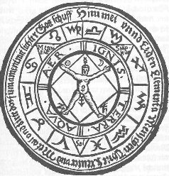
mandala de l'Ixion hermétique [De Microcosmo, Basilius
Valentinus, 1677]
D'Espagnet associe Ixion à l'Artiste, qu'il compare, ce faisant,
à une sorte d'Hercule chargé du travail infernal de
tourner sans cesse cette roue ; par là est signifié le
caractère permanent de l'Eau des Sages. Ixion -
Ixiwn - est
congénère par cabale de
ixoV [
humeur visqueuse, résine].
Remarquez à présent ce que nous avons dit plus haut,
touchant à la
viscosité
et à son rapport au serpent ; et encore au but de la Grande
Coction : la coagulation progressive de l'eau
mercurielle, c'est-à-dire la volatilisation du
dissolvant ; enfin au double caractère de la rose [
étoile ou fleur].
Il vous sera facile de comprendre alors pourquoi les alchimistes ont
tellement tenu à associer l'aube au chant du coq, au point que
Basile Valentin, dans sa
Clef III de
Philosophie [
Douze Clefs]
a fait voir l'importance que revêtait cet instant de l'oeuvre :
le combat du fixe et du volatil, symbolisé par celui du coq [
il
y a en fait deux coqs, où il faut voir sans doute un coq et
une poule ; personne n'a expliqué cette énigme
jusqu'à présent... voyons là-dessus la figure XVIII de l'AC]
et du renard : or, l'examen
de cette Clef ne laisse aucun doute, puisque le renard tient dans sa
gueule la tête de l'un des volatiles, mais l'on n'y distingue
point
de crête, preuve manifeste qu'il ne s'agit pas d'un coq mais
bien d'une
poule. Le sens alchimique du coq est très clair : il est
l'hiéroglyphe de la réincrudation du Soufre,
c'est-à-dire de l'incarnation de l'Âme dans le Corps [
cf. supra sur le
coq, le sanglier et le serpent]. Mais
revenons à la roue : Fulcanelli écrit :
«
Au
Moyen Âge, la rose centrale des porches de cathédrale se
nommait rota [...] Or, la roue est l'hiéroglyphe alchimique du
temps nécessaire à la coction de la matière
philosophale et, par suite, de la coction elle-même [...]
Cependant, outre la chaleur nécessaire à la
liquéfaction de la pierre des philosophes, il faut en plus un
second agent, dit feu secret ou philosophique. C'est ce dernier feu,
excité par la chaleur vulgaire, qui fait tourner la roue. »
[
Myst. Cath.]
Nous évoquions tout à l'heure le parallèle entre
la roue alchimique et la roue du zodiaque. Un autre parallèle
peut être posé entre la roue du temps hermétique et
la
roue de la fortune ou sphinx du
tarot : c'est encore une épiphanie solaire stigmatisant le mythe
de l'éternel retour que le disciple d'Hermès
interprète comme l'Ouroboros de la
Chrysopée
de Cléopâtre et le Tout en Un. Sur le sujet, on remarquera
que ce mythe a une portée universelle ; Jung, dans son
Commentaire sur le
Mystère de la Fleur d'Or [
préface au Yi King, trad. Albin
Michel, 1979] note ceci :
«
Notre texte promet de "
révéler le mystère de la fleur d'or du grand
Un ". » [
p. 40]
Ce grand Un est l'
En To Pan
tant signalé par les alchimistes grecs [
cf. Berthelot, Introduction à
la Chimie des Anciens et R. Halleux, Alchimistes
Grecs, Belles Lettres, t. I, 1981] et que Canseliet
reprend
dans ses
Deux
Logis alchimiques.
Aussi est-ce ent toute logique que Jung voit, dans les rosaces de nos
cathédrales, le Soi de l'homme transposé sur le plan
cosmique ; on peut aller plus loin et voir non moins dans l'agencement
des étoiles en constellations, cette transposition
élargie à l'univers en une sorte de test de Rorschach
géant, comme nous l'avons dit dans d'autres sections [
1, 2, 3, 4].
On ajoutera que la rosace agit comme une sorte de condensateur de
l'énergie psychique, chose peu réalisable lorsque l'oeil
contemple la voûte céleste : dans un cas, ce qui prend
valeur d'impression ne peut avoir, dans l'autre cas, que valeur
d'expression : voilà qui se retrouve en musique où un
stimulus incessant agit en irriguant la psyché de toute part. Eh
bien ! La même chose, dans le domaine des correspondances de la
fleur d'or, survient avec l'emblème du
Summum Bonum
: ce stimulus, nous le retrouvons dans cette vie - par le biais de la
confection du miel - qui anime la vie des abeilles et imprime au nectar
la qualité de quintessence ; par leur activité
industrieuse, ces êtres de feu parés des vertus de la
Justice [
le glaive par leur dard et la sagesse par
l'ordonnancement de leur ruche],
font littéralement surgir la lumière de
l'obscurité. Un autre texte vient à propos
éclairer nos idées sur l'Aurore naissante : la
Toyson d'Or,
alias
Splendor
Solis.
Ce n'est évidemment pas un hasard si l'on a relevé des
points communs entre le texte, compilation de Salomon
Trismosin [
pseudo] et
celui de l'
AC.
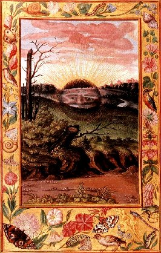
l'Aurore de la Toyson d'Or
III. Animus et Anima.
Aurora Consurgens,
le mariage des contraires,
l'Annonciation de la conjonction radicale : blanc, couleurs de la queue
du paon, sortie du Pont-Euxin des Argonautes à bord de leur
intrépide Argos, irruption de la colombe, montée du
Spiritus sanctus [
cf. Ros. Phil.],
passage de l'obscurité à la lumière [
cf. Lux Obnubilata],
surrection de Délos, manifestation de l'écume sur
les vagues de la mer Noire annonçant Aphrodite [
nul rapport avec la Vénus
hermétique dans ce contexte ; il faut y voir une mousse
d'écume : ajroV
selhnoV ou sélénite renvoyant au
Soufre blanc]...
Nous touchons là aux limites du
Mysterium Conjunctionis
tel que
Jung l'a exposé dans son bouquet final sans hélas
l'
AC,
confié en d'autres mains. Commençons ce point
par cette citation de Morien :
«
Ô bon Roi ! dit Morien,
vous devez savoir parfaitement avant toutes choses, que la fumée
rouge, et la fumée
blanche, et la fumée orangée,
et
le lion vert, et
Almagra, et l’immondice du mort, et le limpide, et le
sang, et I’Eudicu, et
la terre fétide, sont des choses dans
lesquelles consiste tout le magistère. Morien explique dans la
suite
ce que c’est qu’Eudica. Eudicu, dit-il, est la chose la plus
secrète
de toutes celles que je viens de nommer. On l’appelle autrement
Moszhacumia,
ce qui signifie féces ou immondices du verre.
» [
Entretiens de Calid
à Morien, cité par Pernety in Dictionnaire
Mytho-hermétique]
L'
AC
annonce le mariage des époux
royaux : dans le
Commentaire au
Mystère de la Fleur d'Or, Jung dans le chapitre 2
Animus et Anima
traite le sujet mais, de façon singulière, opte pour une
solution qui ne nous satisfait pas. Examinons les
éléments du problème : p. 56, il fixe le cadre en
nommant les deux protagonistes du mariage « chymique », par
élimination implicite des Dieux qui, il est vrai, sont
étrangers à l'affaire. Par Animus s'entend un «
génie des nuages », une « âme de souffle
» dépendant du principe
YANG,
d'essence masculine [
Sulphur 
].
C'est l'équivalent de Gabricius [
en arabe Kibrit : soufre. Les
alchimistes ont employés des termes comme kibrich ou kibrith,
cf. Jung : Histoire et psychologie
d'un symbole, in Psychologie et Religion,
p. 194]. Marie la Prophétessse enseigne qu'il faut :
«
rectifier sur ce corps Kibrich et Zubeth,
c’est-à-dire, les deux fumées qui comprennent et qui
embrassent les deux luminaires,
et mettre dessus ce qui les ramollit, et qui est l’accomplissement des
teintures et des
esprits, et les véritables poids de la Science. »
[
Pernety, Dictionnaire
Mytho-hermétique]
Animus représente la fumée rouge [
1,
2,
3]
c'est-à-dire l'orpiment rouge qui s'oppose à l'Arsenic de
Djabir. Petrus Bonus a fait remarquer que :
«
Le soufre rouge, lumineux, et
caché
dans l’argent vif, puisqu’il constitue en puissance la disposition de
l’Or, il teint et transforme
toute sorte de métaux en Or. » [
Margarita Preciosa
Novella]
Anima correspond au « fantôme blanc » dans lequel il
est aisé de reconnaître la fumée blanche [
1,
2,
3,
4,
5] d'
Artephius,
dont Michel Maier parle à plusieurs reprises et de
manière bien caractérisée dans ses emblèmes
de l'
Atalanta fugiens
[
voyez en particulier
l'emblème XX]. Anima
dépend du principe
YIN, d'essence
féminine
ou
[
il y a là une
ambiguité
difficile à lever entre le premier Mercure et le Mercure dit
« de la voie commune », de la même espèce que
celle qui existe entre le sel dit « de liaison » et le
principe SEL qui désigne le Soufre blanc ou résine de l'or].
Tel
est l'enseignement primordial et élémentaire du
Yi King,
dont Jung posait ce commentaire en portique de son oeuvre alchimique
à venir, en 1928 : il est vraisemblable que le sinologue Richard
Wilhelm, qui avait fait connaître à Jung ce texte capital,
ait
été à la base de l'intérêt, qui
devait être de plus en plus prégnant, du maître de
Zurich, pour l'Art sacré. Quoi qu'il en soit, ainsi
posés, le patient [
Anima]
et l'agent [
Animus] des
alchimistes
sont parfaitement définis et, relativement à
l'hypothèse des archétypes que développe Jung,
s'intègrent magnifiquement dans cette
imago mundi
du psychanalyste. Toutefois, dans son développement, Jung
s'éloigne de ce schéma et entend les affects qui
s'intègrent dans une personnalité c'est-à-dire
dans un Corps, remarquons-le bien. Il donne encore le qualificatif
« d'empreinte » à l'Anima en tant qu'il concerne les
expériences de l'homme dans ses rapports avec la femme. Pour
autant, Jung ne parvient pas à établir la relation entre
« Animus » et « homme » et il
préfère, compte tenu des problèmes de type
nosologique, se rabattre sur la relation de l'Anima à la
féminité. Il entre alors dans des considérations
étranges qui, de notre avis, conduisent à un contre sens
de l'interprétation hermétique [
évidemment,
leur sens dans la pschynalalyse ne saurait être mis en doute ; il
n'entre pas dans nos vues d'engager ici une exégèse de la
vision médicale de Jung et nous ne sommes pas qualifiés
en ce domaine combien même il nous arrive très souvent
d'avoir à traiter des cas qui relèvent de la
problématique posée par le psychanalyste].
En bref, ce contre sens semble tenir au concept « d'individuation
» sur lequel nous aurons à revenir : Jung définit
en effet l'Anima comme
la fonction de relation avec l'inconscient. Or, chose étrange !
Envisagé sous le point de vue alchimique, l'inconscient renvoie
par essence à l'Esprit ; et que l'Âme s'y trouve
infusée n'étonnera nul Adepte
; même l'impétrant n'ayant que quelque teinture de science
peut arriver à comprendre cette épiphanie. Dès
lors, envisager le conscient comme un effet de l'Âme n'est plus
« qu'une vue de l'esprit » et dépend
entièrement du système de
référence d'où l'on a décidé de
prendre ses mesures ; ainsi avons-nous le droit d'inférer que
l'Orient qui «
regarde à l'inverse le conscient
comme un effet de l'anima » [
Fleur d'Or, p.
60]
a vu juste, puisque la révélation ne peut venir que de la
réincrudation, chose là encore parfaitement
exprimée par l'une des gravures du
Ros. Phil.
Et la
réincrudation est l'exact
équivalent du concept d'individuation sur lequel Jung a
forgé tout son sytème.
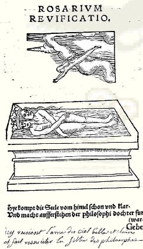
Rosarium revificatio
[réincrudation]
La réalité psychique dont
parle Jung n'a de réalité, dans le petit monde des
alchimistes, qu'à travers la projection du Soufre dans le Sel,
en masse.
Il faut prendre garde, toutefois, de ne pas confondre la
résurrection à proprement parler - résurgence de
la matière du chaos formé par le dissolvant - qui a pour
équivalent alchimique la 1
ère sublimation [
sulphur : opération dont le but
est l'animation du Mercure. ] et la
réincrudation qui est la 2
ème sublimation [
spiritus : opération dont le but
est la sublimation du Mercure] ; quoi qu'il en soit,
la projection consiste en
cette opération. Jung a consacré un chapitre de ses
Racines de la Conscience
[
Buchet-Chastel, 1971]
à ce problème, dans l'exposé des
Visions de Zosime :
«
La conscience de Zosime demeure pourtant
encore fascinée par la projection au point qu'il est incapable
d'apercevoir dans la vision autre chose que " la production de liquides
". » [
les
Personnifications, chap. III, pp. 179-184]
Jung manifeste ici, comme nous avons déjà eu l'occasion
de le signaler, l'impossibilité de concevoir que les alchimistes
aient pu, de façon réelle, oeuvrer au fourneau. Non pas
que sa vision du travail intérieur de l'alchimiste soit fausse !
Mais son regard, dès qu'il est question d'opérations
autre que spirituelles, semble comme décalé en
dépit des fulgurances géniales dont son discours est
constellé. Lorsque, par exemple, il affirme que le «
monde
physique n'était pas encore découvert »
alors que Zosime est du IIIe siècle ap. J.-C., la lecture de l'
Histoire de la Chimie
de F. Hoefer ou de R. Jagnaux permet de montrer l'inanité de
cette réflexion. Certes les alchimistes ne savaient pas ce
qu'ils faisaient : ils mixaient des substances d'aspect terreux ou
salin et obtenaient, à force de cibation, de coction, de
calcination, souvent prolongées, des corps qui
possédaient des prorpiétés cristallines et dont
certains, sans doute, avaient le pouvoir de rayer le verre. Que par
ailleurs l'alchimiste ait opéré une projection de sa
psyché dans la matière n'en est pas moins parfaitement
exact et c'est même ce qui rapproche dans une large mesure
l'approche de l'alchimie de celle de la musique. Voyons un autre
passage :
«
Rien n'était plus aisé que
de mettre l'histoire d'amour de Mars et Vénus en
parallèle avec celle de Gabricius et de Beya [...] »
[
idem, p. 183]
Jung aurait-il formulé cette conjecture s'il avait su ce qui
séparait la préparation du Mercure de celle des principes
croisés, c'est-à-dire principiés ? Voilà
qui mérite quelques explications : le mythe de

et

se rapporte à la confection du salpêtre
des Sages :
est un vitriol [
bleu, blanc ou vert] qui
contient le principe de ponticité du
tandis
que
est ce sel de vertu céleste contenant le Nitre
aérien dont s'entretenait avec Helvetius le mystérieux
Adepte qui vint un soir lui apporter la preuve de la
réalité de l'
Ars
chemica [
cf. Vitulus Aureus
; l'histoire a été rapportée par Leibniz, voir en
bibliographie]. Du mélange d'Arès et d'Aphrodite
se forme le
tartre vitriolé [
arcanum duplicatum ou alkali fixe 
] et le safran d'alun [
il n'a pas de symbole chez les anciens
chimistes ; nous proposons l'idéogramme du tartre qui a
l'avantage d'être la contre partie du sulphur : 
] dont le nom vulgaire fut
ignoré jusqu'au XIX
e siècle mais qui
était connu des Anciens comme de la terre de Chio. Quant
à Gabricius et Beja, il s'agit du couple alchimique des
luminaires {
,
}.
On voit Sol et Luna chevauchant leurs montures mercurielles, lion d'un
côté et griffon de l'autre, sur cette
miniature
qui rappelle la
figure III. De cette lutte
des principes contraires va naître un nouveau composé,
l'androgyne ou hermaphrodite, que Zosime compare à l'aigle
d'airain ou que les textes médiévaux, comme ceux de l'
Artis Auriferae,
comparent à l'homme blanc contenu dans le vase ; le
Donum Dei
s'avère très utile pour des comparaisons avec des
gravures du
Ros.
Phil. ; d'ailleurs, ces traités sont
congénères. Dernier extrait :
«
À ce contexte se rattachent
également les figures souvent citées de " la femme
blanche " et de " l'esclave rouge ", qui désignent Beya et
Gabricius [Visio Arislei, in Artis
Auriferae, i, p. 94]. » [
ibid.,
pp. 182-183]
Le point intéressant est qu'il ne s'agit plus du
et de la
qu'il est question, ou si l'on préfère,
des principes simples. Les deux expressions « femme blanche
» et « esclave rouge » ressortissent des principes
principiés de Chevreul, c'est-à-dire du résultat
de leur mixtion avec le Mercurius, les transformant respectivement en
sulphur
et en sel
. [
rappelons que
ce principe sel pose un
problème d'interprétation ; en tout cas, ce n'est point
comme on le prétend parfois une invention de Paracelse].
Si l'on voulait donner des exemples
tirés du monde minéral - qui est le domaine
d'appropriation psychique de la matière brute par les
alchimistes - nous opterions volontiers pour l'
aventurine
ou pour ces strass colorés au
pourpre de
Cassius.
Au plan historique, on sait bien que, contrairement à ce
qu'annonçaient de vieux mythographes, les écrits
hermétiques
sont beaucoup plus récents - II
e ou III
e
siècle ap. J.-C. - qu'on l'escomptait du temps de Don Pernety.
Cela
a continué d'avoir des conséquences fâcheuses dans
la manière de certains critiques d'envisager la chronologie de
l'alchimie et partant, sa phénoménologie. M.-L.
von Franz, dans son beau livre sur Jung et son mythe dans notre temps,
a consacré pas moins de trois chapitres sur le sujet [
chapitres X à XII].
Nous ne partageons pas toujours son point de vue et la vision
apologétique systématique qu'elle donne du psychiatre a
quelque chose qui finit par être irritant, de même que ses
« piques » incessantes contre les critiques qui ont pu
avoir le malheur de dire quelque mal de son maître. Il
n'empèche : sans M.-L. von Franz, Jung n'aurait sans doute
jamais
pu aboutir dans ses travaux d'analogisme herméneutique [
l'expression est d'Antoine Faivre, cf. Philosophie de la Nature,
Albin Michel] appliquée
à la psychanalyse et il manquerait aujourd'hui cette somme
exceptionnelle qu'est le
Mysterium Conjunctionis.
Dans le chapitre X, on peut citer un extrait qui met en lumière
des pratiques d'embaumement de cadavres : elles jettent une
étrange
lumière sur des gravures du
Ros. Phil.
«
C'est vraisemblablement l'heureuse
rencontre de l'esprit spéculatif de la Grèce avec le métallurgie
hautement développée de Babylone et la technochimie
égyptienne — en particulier l'art de l'embaumement. des
Égyptiens dont le sens était purement magique — qui a
réalisé ce fructueux renouveau d'une vraie science de la
nature à l'époque alexandrine et au cours des premiers
siècles chrétiens [...] » [
d'après
Jack Lindsay. The
Origins of Alchemy in Graeco-Roman Egypt, Londres, 1970,
cité par M.-L. von Franz]
L'expression « technochimie » fait sourire... ce que l'on
peut dire, c'est que sans la préexistence des croyances
religieuses, l'art d'embaumer les morts n'aurait jamais existé :
le religion fit donc ici fructifier la science, comme cela est si
souvent arrivé dans l'histoire... et nous ajouterons la guerre
hélas ! Tant il est vrai que guerre et religion ont partie
liée. F. Hoefer [
Histoire de la Chimie,
Première époque, § 11, p. 58]
nous apprend que les prêtres chargés du soin d'embaumer
les corps se nommaient
rephim.
Voici ce qu'il dit d'un
procédé simplifié pour ceux qui ne pouvaient pas
supporter la manière la plus somptueuse : on pratiquait des
injections d'huile de cèdre dans le ventre du défunt sans
laparotomie, par voie rectale. Puis on laissait le corps dans une
saumure de natron pendant quarante jours [
rappelons qu'il s'agit du nombre de
jours où le christ est resté dans le désert].
À l'expiration du terme, on fait sortir l'huile de cèdre
qui a
été introduite par l'anus. Son action est telle qu'elle
entraîne intestins, mésentère et l'ensemble des
viscères qui ont été ramollis et dissous ; quant
au natron, il a consumé les chairs en sorte que le cadavre ne
porte plus que sa peau sur ses os : le corps a, pour ainsi dire,
été consumé par le feu du natron et il ne reste
plus que l'enveloppe, c'est-à-dire l'écorce. Tel est
l'enseignement d'Hérodote [
Lib.
II, c. LXXXVI et LXXXVII].
Si nous avons fait ce bref détour vers les vieux Egyptiens,
c'est pour faire valoir deux choses : Mme von Franz a disposé en
note ceci qui est d'importance :
«
La liturgie égyptienne e
l'embaumement a exercé une influence considérable sur ces
conceptions [cf. infra],
car ses rites assurent, par des opérations concrètes, la
transformation du mort en Osiris et, par suite, sa déification. »
[
Jung et
son mythe en notre temps, chap. X, p. 227]
avec cette note :
«
La signification de cet aspect me paraît avoir
échappé pour une très grande part à
Lindsay. Le cadavre était trempé dans le natron. Natron :
ntr signifie " dieu ". » [
idem]
Il nous semble que M.-L. von Franz a commis une imprécision
: car natron n'a jamais signifié « dieu » ; ntr est
mis pour
neter [
on parle de neter Isis]. On
trouvait du natron [
carbonate de
soude]
à l’état naturel dans la région de Wadi Natroum
à l’ouest du Delta entre Le Caire et Alexandrie d'une part et la
Haute-Égypte près d’el-Kab, d'autre part. Le
natron
était utilisé en morceaux sans dissolution pour la
momification, pour la purification des maisons, pour l’hygiène
en tant que savon et dans la fabrication du verre [
cf. Mercure].
Quant au neter, dans l’écriture hiéroglyphique, il
s'agissait d'un mot traduisant le terme de dieu. Il est possible
que cette imprécision vienne d'une confusion
entre l'égyptien ancien neter et l'hébreu neter qui
désigne notre natron [
sodium
vient de l'arabe " suwwad ", une plante à haute teneur en
carbonate de sodium appelé dans la Bible " neter ", ou du mot "
sodanum ", un remède médiéval contre les
céphalées. Le carbonate de sodium est
désigné au Moyen Âge par " soda " en italien et "
Natron " en allemand. Le symbole Na vient des deux premières
lettres du mot " natrium " qui était utilisé au XVe
siècle en Europe pour désigner les métaux
alcalins, cf. http://www.vanderkroft.net/elements/.].
Le signe se
présente sous la forme d’un mât terminé par un
petit drapeau ou sous la forme d’un homme assis, portant la barbe,
symbole de la divinité et l’ankh [
Symbole
de vie et d’éternité, le signe ankh était
utilisé pour signifier le verbe " vivre " ou la " vie ". On
parle souvent de « croix de vie ankh » mais cette
réduction cruciforme paraît n'est que le fruit d’une
assimilation chrétienne. Rappelons que Fulcanelli parle à
plusieurs reprises du signe ankh dans la première partie de sa
trilogie.].
Le neter représente aussi l’énergie active du dieu : on
ne saurait mieux trouver l'équivalent alchimique du neter que
dans l'Airain des Sages. Fulcanelli insiste sur l'équivalence
entre le signe ankh [
croix
ansée] et Cypris [
kupriV, l'impure]
et va même jusqu'à écrire :
«
Nous dirons même que le plan des grands édifices religieux
du Moyen Âge, par adjonction d'une abside semi-circulaire ou
elliptique soudée au choeur, épouse la forme du signe
hiératique égyptien de la croix ansée, qui se lit
ankh, et désigne la vie universelle cachée dans les
choses
[...] » [
Myst. Cath., p.
60]
Si nous insistons sur ce point - le rapport entre ankh et Vénus
-
c'est parce qu'il n'aura pas échappé au lecteur que
nombre des aquarelles de l'
Aurora consurgens
possèdent un fond bleu ; on pourrait penser que ces
rapprochements allégoriques doivent être rejetés
; cependant il y en a qui
paraissent réellement avoir une certaine connexion avec des
faits empruntés à l'art chimique :
ainsi par exemple, l'expression « ciel d'airain », dont il
est si souvent question dans la mythologie ancienne, signifie tout
simplement ciel bleu ; car l'airain vulgaire, ou plutôt l'oxyde
de cuivre donne, étant convenablement fondu avec du cristal [
sable et potasse]
un verre bleu de ciel. Nous voici très proches des idées
alchimiques liées à la sublimation qui est presque,
notez-le bien, synonyme de conjonction pour les Adeptes. C'est donc le
lieu de revenir un court instant sur les Éléments
d'Empédocle dont l'essence est omniprésente dans les
aquarelles que l'on verra bientôt.
Le Feu

ou
élément igné est
considéré par les philosophes de la Grèce - les
Présocratiques - comme le principe de toutes choses ; le feu
constitue la force primordiale de l'Artiste [
notre Hercule ou Cadmos, notre Jason]
et il tient sous sa dépendance toutes les métamorphoses
qui s'opèrent dans l'
oeuf des philosophes [
on notera que la figure
précédente est remployée de la Monade
Hiéroglyphique
de John Dee datant de 1564, cf. figure XIII de ce traité ; cette
figure est bien plus complète et explicite que celle du Ros.
Phil. de Griemiller]
: il détruit
certes mais pas à la manière d'un acide et surtout, c'est
à la condition
sine
qua non de reconstituer [
Arist. Metaphys. ;
Plutarch. Decret.
phil. ; Diog. Laert.].
Les alchimistes [
cf. aurea Catena Homeri
ou la Nature
Dévoilée] nous assurent que l'état
primitif du
monde était un état igné et qu'il viendra un temps
où le monde se résoudra à nouveau en feu [
Arist. Physic. ;
Clement. alexand.
Stromat.] ; ils avaient parfaitement bien anticipé les
découvertes de la physique [
notre
monde est promis à la destruction ignée quand le soleil
se transformera en nova, dans cinq milliards d'années...].
Le feu, s'il est primordial, est intangible, du moins dans sa forme
vulgaire car le feu des alchimistes n'a pas, pour rien,
été qualifié de feu secret. Il possède des
vertus assez extraordinaires, si ce n'est paradoxales. Qu'on en juge :
il dissout sans détruire ; il fait fructifier ; il a la
capacité de se régénérer et de se
détruire [
d'où
l'allusion incessante au serpent Ouroboros]
et enfin, il possède la propriété unique de
céder la place à plus jeune que lui ; Senior
disparaît pour Adolphus [
cf.
Azoth de
Basile Valentin]
mais le jeune homme conserve cette disposition ignée tant que
les hardes du vieillard ne se sont pas dissipées en
totalité : c'est l'allégorie de la coagulation de l'eau
mercurielle. En revanche, ce feu assure la conversion des
éléments : la terre se réduit en eau, l'eau en air
et l'air en feu [
c'est là
l'image de l'évaporation de l'eau qui, dans le schéma
hermétique, conduit à celle de la sublimation : la vapeur
s'élève en fumée blanche ou rouge tandis que la
terre, en forme de sels terreux, en faex ou trux, se dépose au fond du vase].
De là, ce rappel :
«
Il monte de la terre au ciel, &
derechef il descend en terre, &
il reçoit la force des choses supérieures &
inférieures. » [
Table d'Emeraude]
évoquant le chemin qui monte [
dégagement] et le chemin
qui descend [
fixation].
Le premier est le symbole hermétique de la sublimation,
allégorie que les Artistes ont voilé sous le masque des
Aigles ou des colombes, avec une connotation évidente aux crues
du Nil [
cf. Diodore de Sicile].
On voit toute la difficulté qu'il y a, dans les textes anciens,
à distinguer une matière visqueuse d'un dégagement
provenant d'un corps aériforme et à comprendre que le
ciel
firmamental n'est autre que
l'étendue délimitée entre le centre et la
circonférence. En revanche, on peut comprendre sans peine que le
symbole solaire exprime tout autant l'hiéroglyphe astral que sa
marche même, dont la ligne de retour est superposable au serpent
Ouroboros. Michel Maier en a dit :
«
C'est l'argile brillante
dont fut façonnée par la roue et
la main du très haut et du très puissant potier, cette
substance terrestre dans laquelle les rayons du soleil sont
rassemblés et retenus. Cette substance est l'or. »
Argile brillante est un pléonasme dans la bouche d'un Adepte ;
il est vrai que par cabale, nous avons affaire à une riche
constellation. Souvent, dans les vieux textes, on lit toutes sortes
d'histoires qui racontent les embûches du larron, les tracas de
l'impétrant, les chagrins éprouvés lors des
échecs successifs ; Philalèthe, dans son
Entrée Ouverte
au Palais fermé du Roi parle de l'ennui de la
première préparation :
«
Mais moi qui connais l'opération
pour l'avoir pratiquée avec soin, je
sais à n'en pas douter qu'il n'est pas de travail plus ennuyeux
que
notre première préparation. C'est pourquoi Morien avertit
sérieusement
le roi Calid que beaucoup de sages se sont plaints de l'ennui que leur
causait cette opération. »
[Introïtus, VIII,
§3]
En grec,
argaleoV
englobe tout ce qui est pénible, difficile, etc. L'assonance est
proche avec
arghV,
décrivant tout ce qui est blanc, éclatant ou brillant [
en
évoquant la lumière, chose fondamentale ; à
rapprocher aussi de l'évocation de terrains calcaires ou crayeux
: les mérelles ne sont pas loin] ;
arghV
est encore une sorte de serpent dont il possède
l'épithète « le brillant ». Ce n'est pas tout
: il faut citer le vent Notus,
argesthV,
véritable fleuve d'air [
réputé
rapide, tumultueux, orageux et ayant, en bref, des caractères
qui le rapprochent de Zeus au foudre rapide : argikeraunoV, que l'on
ne peut qu'associer à argikerwv : aux cornes
blanches, évoquant Diane aux cornes lunaires ou tout simplement
le croissant de lune]. Voyez encore à l'article
argilla [
demeure souterraine ou gît la
materia prima] et enfin, à
argiloV [
argile, terre glaise, terre grasse
d'où sort Adam dans l'une des figures
somptueuses du Splendor Solis].
Mercure est même évoqué par
argoV [
rapide,
léger, par relation entre l'idée de lumière et de
vitesse ; c'est aussi une évocation d'Atalante et
d'Hippoménès, les deux lions de Cybèle] ;
puis l'homonyme
ArgoV,
bouvier aux cent yeux dont nous avons parlé à plusieurs
reprises dans notre commentaire de l'
Atalanta fugiens
? Ou encore à l'architecte du vaisseau éponyme, Argos,
fait en bois des chênes séculaires de Dodonne, l'oracle
où bruissaient des feuilles auxquelles on avait attaché
des matières d'airain ? Voit-on enfin la relation à
l'argent [
argoV, forme passive d'arguroV, argent brut]
? Enfin, pour dévoiler le nom vulgaire de cette matière,
nous dirons qu'elle tient le milieu entre l'or et l'argent et
qu'autrefois, on l'appelait le verre malléable... Et c'est la
Nature elle-même qui a fait actionner la roue, où ce
« puissant potier » a imposé la forme de son Soufre,
anima mundi.
Dans ce qui précède, c'est l'élément
Air

qui domine. Ainsi que la lumière où nous suputtons la
quintessence future des scolastiques médiévaux : l'anima
mundi

apparaît comme un corps aériforme ; on
l'appelle
tantôt
pneuma kosmou,
tantôt
qeioV logoV
[
verbe divin].
Des critiques y ont vu l'Esprit universel des alchimistes et ont
même donné un nom à cet esprit : gaz sylvestre et
oxygène. L'attraction et la répulsion, qui sont au coeur
même du
Mysterium conjunctionis,
tenaient lieu de dogme pour Héraclite, Aristote et
Diogène
Laërce. Mais c'est avec Empédocle que le dogme s'est pour
ainsi dire incarné ; l'amour et la haine tiennent une haute
place dans sa philosophie comme ils en tiennent une, non moins
élevée, dans l'oeuvre alchimique. C'est au Mercure
,
l'intercesseur, le procurateur, l'ordonnateur, l'appariteur, qu'on a
dévolu cette tâche ingrate de conjoindre ces deux grands
ennemis que sont l'Eau et le Feu afin d'en établir une Terre
où l'on tient captif un rayon igné divin

. C'est à
Empédocle que les Adeptes doivent l'initiation du concept de
« patient » et « d'agent » dont Fulcanelli
parle encore au début du XX
e siècle. Le feu,
suivant le philosophe d'Agrigente, est le principe actif par excellence
tandis que les autres éléments ne constituent qu'une
masse inerte. Toutefois, les alchimistes ont corrigé ce premier
schéma et ont établi que le feu secret - leur dissolvant
- était un Mixte d'Eau et de Feu et que l'Air était son
milieu naturel, tel que nous l'avons compris
supra.
Donc, la Terre seule se révèle l'élément
passif ; du moins cette passivité n'est-elle que transitoire
puisque, à la manière d'un grappin, d'un loup, elle
représente l'artifice secret qui est la clef de la coagulation
du Mercure, c'est-à-dire de sa propre sublimation. Au sein de la
masse mercurielle - nous parlons du Compost, i.e. mixte
Mercure-Rebis - les forces d'attraction et de répulsion
président aux métamorphoses de la matière
visqueuse, sont responsables des mouvements de cohobation et
parviennent à combiner les contraires : c'est le temps de la
conjonction radicale des principes. Cet état du petit monde
avant la prime conjonction, c'est-à-dire avant l'
Aurora Consurgens
-
UNUS MUNDUS
- est l'équivalent du chaos dans lequel les
éléments sont littéralement à l'état
de non-combinaison ou encore, à l'état naissant [
correspondant à l'or enté
ou or mussif de Fulcanelli]. La conjonction opère
l'harmonie [
en, kosmo, qui rejoint les
inscriptions qu'on trouve dans les écrits de
Cléopâtre].
Leucippe est encore allé plus loin dans l'analyse puisqu'il
donne même un Corps à l'Âme en y voyant des «
insécables » ou « atomes » ; la conclusion est
d'importance : l'âme est un être igné,
peut-être identique au feu - d'où l'idéogramme

et il est amené à
anticiper sur le phénomène de combustion [
Arisot. de anima].
Démocrite est plus tardif et son nom a été repris
comme éponyme dans plusieurs traités dont on trouvera des
traces dans nos pages. Vitruve assure que Démocrite avait
coutume de sceller de son anneau les expériences qu'il avait
vérifiées lui-même [
Vitruve, IX, 3].
Cette coutume s'est-elle reproduite chez les alchimistes ? Nous ne
saurions dire, mais ils ne manquaient, parait-il, jamais d'apposer sur
leurs fioles le sceau vitreux d'Hermès [
1, 2, 3, 4,
5, 6, 7, 8, 9, 10, 11, 12, 13, 14,
15,
16,
17, 18, 19, 20, 21, 22,
23].
Sénèque nous apprend que c'est au philosophe
d'Abdère qu'est due l'invention du fourneau à
réverbère, des moyens d'amollir l'ivoire, d'imiter la
production des pierres précieuses et particulièrement des
émeraudes [
Senec. Epist. 90].
Démocrite est allé loin dans sa logique puisqu'il est
possible, par analogie, de transcrire en termes de physique quantique
certains des postulats qu'il imposait aux atomes, en particulier le
fait que deux atomes ne peuvent pas occuper simultanément le
même espace : de même, deux particules ne peuvent pas avoir
le même niveau énergétique ; il anticipe sur
l'oscillation [
palmoV]
et de là conçoit un mouvement giratoire, un tourbillon
dont il est fort possible que Descartes se soit souvenu dans sa
théorie des tourbillons qui a fait long feu... Mais on retrouve
ce
palmoV chez
nos alchimistes, sous l'espèce de l'agitation de l'âme via
le neter [
égyptien]
dont nous parlions
supra en
évoquant
l'imprécision de M.-L. von Franz. Laissons parler à
nouveau
Maier :
«
Il y a, dans notre mercure, un soufre
ardent ou sulphureus ignis.
»
Ce feu, selon Jung, forme la semence spirituelle
et elle a besoin d'une
terre appropriée pour végéter. C'est là
qu'intervient la
Virgo
paritura des alchimistes ; elle possède
des caractères qui la rendent congénère de la
vierge Marie : pure, sans tache, rendue enceinte par un feu
soufré. Mais là s'arrête l'analogie. Car ce feu est
infernal : c'est l'infusion de ce Soufre qui précipite la
conjonction et qui se manifeste, dans l'allégorie, par l'
AC,
c'est-à-dire par le lever de Lucifer. Il y a plus :
les textes disent qu'il faut, après l'enfantement, mettre la
mère au ventre de l'enfant [
cf.
Figures
Hiéroglyphiques, Aureum Seculum Redivivum,
Livre Secret
d'Artephius, Psautier d'Hermophile].
L'allégorie est assez subtile ; toutefois, si l'on
sait ce que recouvre le Lait de Vierge, la difficulté sera
facilement contournée, cf.
figure VIII.
Aussi est-ce avec justesse que Jung fait de la Vierge un Mercurius
hermaphrodite, par suite de la présence de
l'élément Soufre et ce Soufre, principe vital, nous
ramène au moteur initial qui fait tourner la roue et qui fait
tourner en rond son axe [
primum
movens, quod rotam vertit axemque vertit in gyrum]. Nous avons
ailleurs établi la relation entre le cercle [
gyrus ou guroV] et la
fosse plantée pour planter un arbre.
Singulière vision que nous offre cet exemplaire du
Ros. Phil.
; on se reportera à l'
AC, II
et au mythe de Cybèle et d'Attis pour l'interprétation.
Anaxagoras [
d'où
Naxagoras a tiré évidemment son pseudonyme]
est allé encore plus loin que Démocrite et a compris que
chaque atome était un monde en miniature et que les
métamorphoses naturelles étaient nécessaires si
l'on voulait expliquer que dans le pain ou dans l'eau que nous
absorbons, les atomes et les molécules sont identiques avec
celles dont se composent les muscles, le sang, etc. Evidemment, depuis
Anaxagoras, les choses se sont un peu compliquées, mais le
principe est réel : en particulier, les métaux que nous
absorbons se retrouvent intacts dans les
molécules complexes où ils sont engagés [
hémoglobine, etc.]
Anaxagore établt une relation implicite entre le cercle, la roue
et l'état du monde : les corps composés peuvent
être décomposés en leurs éléments
intégrants [
homéoméries,
cf. Chevreul critique de Salverte, Trésor
de Paracelse]
mais ces derniers éléments ne se résolvent pas au
moyen des agents chimiques mais peuvent se transformer par l'apport de
moyens physiques [
Fulcanelli, DM, I]
: c'est du reste la raison pour laquelle le Mercure des alchimistes
peut agir sur eux, non à la manière d'un feu destructeur
mais à la manière d'un liquide nourricier. Aussi est-ce
un contre sens absolu que de voir dans les alchimistes des
précurseurs des physiciens nucléaires, quand bien
même l'analogie des transmutations est facile à rapporter
; nos lecteurs savent que nous ne défendons point cette vision
quasi manichéenne de l'Art sacré. Quand Anaxagore
prétend que la quantité de matière dont se compose
le monde reste la même, il rend le monde, par là
même circulaire. Cette notion de circulation se retrouve chez
Diogène d'Apollonie par le concept
d'homogénéité ; il fait de l'Air
l'élément dominant et semble avoir la prescience
des phénomènes d'oxydation, qui représentent la
clef de voûte du processus alchimique. Archelaüs de Milet
fera le pas décisif en concluant que le feu est de l'air
raréfié ; voici ce qu'en dit F. Hoefer :
«
À
cette proposition, on ne peut se défendre de songer à
l'hydrogène, qui se présente sous forme d'un air
extrêmement léger (c'et en effet le léger de tous
les gaz) et qui s'enflamme au contact du feu ; ce qui lui a même
valu, à l'époque de sa découverte, le nom d'air de
feu. L'air de feu
brûle dans l'air et donne de l'eau. »
[
Histoire
de la Chimie, Première époque, p. 84]
L'hydrogène est aussi le plus simple des atomes : Bohr en fera
son modèle dans sa théorie de l'électron. Connu
des alchimistes sous l'expression « d'air inflammable », il
sera découvert en 1766 par Cavendish.
Dans la
Fleur
d'Or, p. 62 [
Houei Ming King,
Liu Hua Yang, Chin. Blätter, publié par R. Wilhelm, vol. 1,
version française traduite sous le titre : Le Livre de la
conscience et de la vie, à la suite du Commentaire de Jung],
on relève encore une image absolument extraordinaire de la
sublimation - alors qu'elle n'est malheureusement pas nommée
comme telle -. Là, pourtant, gît le mystère de la
conjonction :
«
Un halo de lumière entoure le monde de l'esprit - [...] - le
vide
est illuminé par la lumière du coeur du ciel - [...] - la
conscience se dissout dans la contemplation - Le disque de la lune
repose solitaire. »
La sublimation alchimique trouve sa vraie définition, son sens
réel, dans le détachement de l'Âme du Corps, ce que
Jung nomme dans son chapitre 3 :
le détachement de la conscience par
rapport à l'objet.
La philosophie chinoise du yoga s'avère très proche des
vues de l'alchimie occidentale, nous voulons parler de la
préparation instinctive en vue du but de la mort, qui n'est pas
une fin : tel est l'enseignement de l'hermétisme occidental. Une
citation d'un Adepte tardif, Cyliani, vaut d'être lue :
«
J'aperçus
un effroyable dragon qui avait un énorme dard à trois
pointes qui cherchait à me lancer son haleine mortelle. Je
m'élançai sur lui en criant: Lorsqu'on a tout perdu, que
l'on a plus d'espoir, la vie
est un opprobre et la mort un devoir.
Il ouvre sa gueule pour me dévorer, je lui plonge dedans avec
tant de force ma lance que je pénètre jusqu'aux
entrailles, je lui déchire le coeur; et afin qu'il ne pût
m'atteindre, je faisais en même temps de rudes efforts à
l'aide de ma lance pour détourner la direction de sa tête.
» [Hermès
Dévoilé, ca. 1831]
Cette vision de Cyliani est typique. Enfin, le « corps subtil
» que signale Jung est à l'identique de la fumée
blanche [
la femme blanche de la Visio Arislei] d'
Artephius et prend le sens d'un gage
de permanence - i.e. de
persistance - de l'Âme, poursuivant son existence grâce au
psychopompe [
symbolisé par
le chien en alchimie],
en dépit de sa dissolution apparente. De ces quelques
réflexions que nous ont inspirées le début de la
lecture du
Commentaire
sur le Mystère de la Fleur d'Or, nous ne
pouvons qu'être émerveillés de ce que Jung doive
être considéré comme le dernier témoin
moderne dans la passation spirituelle qui s'est effectuée entre
Zosime de Panopolis, via Paracelse [
voyez Synchronicité et
Paracelsica, 1952, trad. franç. Albin Michel, 1988],
Newton, Chevreul, Berthelot, etc. pour finalement, en arriver à
se dissoudre, à se déliter avec notre XXI
e
siècle, marquant sans doute en cela l'arrêt du
développement spirituel de notre civilisation.
Poursuivant l'étude du parallèle Lapis-Christus, et muni
des notes que nous avons relevées, nous pouvons mieux
apprécier cette citation de Zosime :
«
Que signifient ces mots : " La nature
triomphant des natures " et ceci : " elle est accomplie et devient
tourbillonnante " ? » [
in Berthelot]
Il s'agit de la transformation des éléments sous
l'influence du neter [
égyptien]
par l'entremise de la nature ;
c'est ainsi que s'exprime en substance l'un des plus grands Adeptes :
Bernard le Trévisan, suivi de près
par
Denis Zachaire. De cette
métamorphose procède la sublimation que l'alchimie arabe
nomme « le grand vent du sud. »
[sur
le vent du sud, cf. 1, 2,
3,
4,
5 -
il faut y voir Euros et aussi Anemos, le vent de l'Hellespont] L'auteur
de l'Enfant Hermaphrodite du
Soleil et de la Lune, resté anonyme,
dit que ce vent du Sud apporte la première
matière de toutes choses sous forme d'une eau visqueuse et
grisâtre dans laquelle il est facile de reconnaître les
traits du Mercure. Mais nous ne pouvons souscrire sans réserve
à cette assertion de Jung :
«
L'équivalent du Saint-Esprit [...] est le feu secret, le
spiritus igneus (esprit igné) dans le Mercurius, dont les
opposés sont un agens (agent), le feu, et un patiens (patient),
le vif-argent. » [
Psychologie et Alchimie,
§e, p. 493]
Le feu secret est le dissolvant dont on connait deux états :
dans sa version primitive, c'est Typhon envoyé par Hera à
la poursuite de Latone. C'est le serpent venimeux et fou que Cadmos
doit abattre, l'équivalent du dragon Ladon qui garde le Jardin
des Hespérides. Dans sa seconde version, c'est l'eau permanente
des Sages, identique au titre de l'ouvrage de Senior
l'Eau d'argent et la
terre étoilée [
cf. M.-L. von Franz, Aurora Consurgens,
vol. III du Mysterium
Conjunctionis, Zurich, 1957]. Or, la folie ne quitte le
Mercure que lors de l'infusion des colombes de Diane [
cf. Introïtus, VI].
Il forme alors le Compost philosophal où s'accomplit la
conjonction radicale et la Grande Coction. Le spiritus igneus
est ce
feu quasi vivant qu'on nomme le Mercure animé et qui
résulte de l'infusion de l'Âme dans l'Esprit
,
c'est-à-dire de l'incorporation de chaux métalliques au
dissolvant : c'est ici qu'opère l'astronomie céleste, cf.
notre
humide radical
métallique. L'agent est bien le feu -
c'est-à-dire l'
ioV
passé de l'amorphe au cristallin par le processus
d'accrétion - mais nous doutons que le patient soit le Mercure
et il manque manifestement un protagoniste aux
Noces Chymiques
de Jung. Il est probable que Jung s'est trouvé ici en butte
à l'une des grandes inconnues du processus alchimique :
l'entrelacement de différentes formulations « mentales
» du Mercure qui empêchent de se faire une vision claire de
ce
qu'est le « premier Mercure » par rapport au Mercure dit
« de la voie commune », outre que l'amalgame [
au sens figuré du terme...]
est vite trouvé avec le vif-argent vulgaire que l'on confond
trop souvent avec l'argent-vif des philosophes. Le commentaire de la
Clavicule
du pseudo Lulle devrait convenir à des précisions que
nous ne pouvons donner ici. Cette décoction dont parle Jung
n'est autre que la Grande Coction où la prima materia [
mais non point la materia prima, ce qui
serait absurde]
est mise à « circuler » dans le vase de nature
élaboré en petit par l'artiste potier. Le pseudo Flamel
sera ici d'un grand secours :
«
[les Philosophes et les Envieux] ont appellé ouvrir et
délier faire le Corps (qui est toujours dur et fixe) mol,
fluide, et coulant comme l'eau, et fermer ou lier le coaguler
puis
après par décoction plus forte, en le remettant encore
une autre fois en la forme de Corps. » [
Figures
Hiéroglyphiques]
car c'est ni plus ni moins que le mystère de la
réincrudation [
que Jung
rapproche du cocnept d'individuation] qu'il nous expose,
après que nous ayons eu
déjà quelque lumière sur celui de la conjonction.
Mais entre la conjonction et la réincrudation, il y a la
conception qui, dans
la vase scellé de l'athanor, prend
les atours d'une singulière parthénogénèse.
En un sens, comme l'admet le
Ros. Phil.,
il semble y avoir trois conjonctions successives qui n'ont pas la
même valeur : le premier stade est celui où les substances
subissent l'action du feu : c'est l'ouverture du métal, la
dissolution totale, la grande éclipse de Soleil et de Lune
dépeinte par Lulle, la nigredo de Jung. Ce premier stade
correspond à la mise à mort du vieux dragon [
Mercurius senex] et dans le
Ros. Phil.
à cette gravure où les époux royaux sont
portés au tombeau. Dans cette dissolution, le sort des deux
parties n'est pas équivalent : le mâle disparaît
entièrement et est soumis à la sublimation dans le
Mercure ; il va subir un « rajeunissement » ou pour
employer un terme de l'art, acquérir l'une des trois couronnes
de perfection de l'oeuvre. En terme de chimie physique, il s'agit de
transformer une susbtance d'un état amorphe en un état
cristallin : c'est ce qui est réalisé avec le corindon
dit hyalin - notre émeri ou « l'émeril »
comme on disait à l'époque de Buffon. Dans
l'iconographie, c'est Lambsprink qui a développé
l'allégorie du vieux roi et du dauphin, le
Spiritus Sanctus
étant figuré sous les traits d'un ange âgé [
Mylius, dans sa Philosophia Reformata,
a repris une partie de ce symbolisme] : voyez les figures du
De Lapide Philosophorum
dont il existe une superbe version dans le
Dyas Chymica Tripartita,
compilation due à Johannes Grasseus [
Grasshoff]. On peut encore
citer Michel Maier, qui, dans l'
emblème
XXIV de l'
Atalanta fugiens
utilise ce thème : le loup gris [
le Mercure dissolvant, qu'il faut se
garder de confondre avec la stibine ]
dévore le corps du vieux roi tandis qu'au second plan, on voit
par projection, le roi ressusciter et surgir du feu.
Cette première phase de la conjonction correspond aux racines de
l'arbre de la gravure de
Figulus
Benedictum.
Cette gravure semble avoir été inspirée par une
belle série que présente Samuel Norton dans plusieurs
ouvrages publiés en 1630 par Vigilantius de Monte Cubiti dans
Dreyfaches Hermetisches
Kleeblat - cf.
bibliographie
- où l'on trouve le
Mercurius Redivivus
et le
Venus
vitriolata.
Il y a huit recueils dans cet ouvrage dont six sont illustrés.
Une illustration, en particulier, va retenir notre attention parce
qu'elle va dans la droite ligne de nos réflexions sur l'arbre,
considéré en trois parties. Il se trouve que cette
illustration figure dans le recueil intitulé
Psychologie et Alchimie
[op. cit.] p. 497 en tant que :
fig.
214. Symbole de la
transformation hermétique : l'homo philosophicus (homme
philosophique) représenté comme le Mercurius.
IV.
Mercurius
Redivivus et AC.
Dans les
Essais
sur la
Symbolique de l'Esprit,
à propos de l'Esprit Mercure, Jung introduit en forme de conte
son sentiment sur la matrice du Mercure fugitif - Mercurius fugitivus
-. Il s'agit d'un conte où le fils d'un pauvre paysan, venant se
reposer au pied d'un beau chêne, le plus grand de la forêt,
entend une voix mystérieuse, provenant des racines de l'arbre.
Il découvre alors une bouteille ou une sorte de flacon et commet
l'erreur - qui eut pu lui être fatale - de desceller le flacon,
hermétiquement clos jusque là. Mercure, sortant de son
gîte, menace alors de s'emparer de l'âme du malheureux
garçon... Celui-ci va user d'un subterfuge qui lui donnera le
salut. Puis, ayant appris à domestiquer - à apprivoiser -
cet Esprit récalcitrant : le jeune homme - l'Adolphus de l'
Azoth
- fait promettre à Mercure de lui faire cadeau d'un
présent de choix comme prix de sa liberté. Aussitôt
dit, aussitôt fait. L'Esprit offre un chiffon magique - nous
dirions volontiers qu'il s'agit d'un phylactère semblable
à ceux que l'on admire sur les caissons de la galerie du
château de Dampierre-sur-Boutonne. Ce tissu a le pouvoir de
métamorphoser le bois en argent [
nous reviendrons sur cette
allégorie]...
L'arbre est un chêne séculaire [
sur le symbole du siècle,
revoyez Huginus à Barma]
: il s'agit de l'un des arcanes majeurs de l'alchimie symbolique,
c'est-à-dire de l'oratoire [
ora
et labora, cf. Cabala,
etc. de Michelspacher et le Mutus Liber].
Il pourvoit, selon la tradition, aux cendres dont l'Artiste a besoin
pour son feu secret. Son bois, quand il est passé au feu
vulgaire, semble seul capable de fournir un puissant calorique. Son nom
est vivier de cabale :
druV
! En remontant jusqu'aux fables sur l'origine des hommes, on les trouve
tirées du chêne ou du rocher ; il ne s'agit pas là
de vains propos... Pour en revenir aux racines, elles ont un aspect
menaçant : elles évoquent les pattes d'un animal fabuleux
- quelque arachnide monstrueux -
ou encore des cheveux. C'est là que réside la Force [
voir Gardes
du Corps de François II ; Tarot
alchimique ; Gobineau de Montluisant]
: mais est-elle Vertu, est-elle Vice ? Sa consubstantialité
à la Terre provoque un entrelacs d'impressions contradictoires.
On trouve dans le
Traité du Sel
de Michel Sendivogius ceci, qui nous éclairera :
«
Notre Pierre est Sel, et notre Sel est
une terre, et cette terre est
vierge. S'arrêtant à peser profondément ces
paroles, il lui sembla tout
à coup que son esprit était fort éclairé,
et il commençait à
reconnaître que ses travaux précédents n'avaient
point réussi selon son
souhait, à cause que, jusqu'à présent, il avait
manqué de ce Sel
virginal, et qu'on ne saurait en aucune façon avoir ce Sel
vierge sur
la terre, ni sur sa superficie universelle, parce que tout le dessus de
la terre est couvert d'herbes, de fleurs et de plantes, dont les
racines, par leurs fibres, attireraient et suceraient le Sel
vierge
d'où elles prendraient leur croissance, et ainsi tout ce Sel
serait
privé de sa virginité et se trouverait comme
imprégné. » [
Sel, Dialogue]
C'est l'amendement de l'Esprit qui est évoqué [
dans le sens où l'on dit qu'une
terre est amendée : koprwsiV,
action de fumer la terre où l'on voit la liaison avec
l'étable, le fumier, mais aussi l'excrément, l'ordure, le
cloaque]. L'idée est de soutirer le Sel de Vierge - i.e.
le Lait de Vierge d'
Artephius - par
un artifice spécial. Et c'est là qu'intervient la racine [
riza],
capable d'opérer de subtiles transformations, basées sur
le mélange de l'eau, de la terre par la fermentation
d'éléments putrides. En un mot, la racine fait pur
l'impur et elle amène l'occulte à la lumière :
aussi faut-il voir dans ces racines du chêne une variation sur le
thème de l'hydre de Lerne aux cinquante têtes [
une figure du Livre
d'Abraham Juif expose magnifiquement cette idée de la
coexistence avec la Virgo paritura].
Au plan alchimique, le sens est clair : point de germination sans
putréfaction préalable. On peut encore citer Nicolas
Grosparmy :
«
[...] Et jamais Nature ne cessera
d'ouvrer et de faire croître le brin de bled, jusqu'à tant
qu'il ait air
et manière humide en son dit compost. Et en croissant icelui
brin de bled par la volonté de Nature, mange et tire par sa
queue, c'est à savoir
par ses racines, l'humeur et la graisse qui est autour de lui,
et s'en vit ledit grain jusqu à tant que verdure durera en lui ;
et quand le brin a tant vécu, que le cercle de Nature
est accompli, c'est à savoir depuis la corruption et
nativité jusqu'à la fin de sa vie ; lors commence icelui
brin à mourir et sécher ; ainsi est accompli le mouvement
de Nature [...] » [
Trésor des
Trésors, adaptation de la Clavis Majoris
Sapientiae d'Artephius]
Pour obtenir de Sel de virginité, cette substance
dépurée qui doit conjoindre les extrémités
de son vaisseau de nature - l'athanor - et les deux natures
élémentaires [
Soleil,
Lune],
l'Artiste doit donc « caver » et fouiller jusque sous le
fondement des racines pour produire sa terre grasse : il trouvera par
ce moyen l'eau vive de sel Nitre. Ainsi que l'annonce Jung [
Essais sur la
Symbolique de l'Esprit, op. cit. , p. 19], le secret se
trouve non point dans la couronne [
nous
y reviendrons] que bien plutôt dans les racines de
l'arbre :
«
Traduit
en termes psychologiques, cela signifierait que le Soi prend racine
dans le corps (= la terre), et même dans ses
éléments chimiques. [...] L'alchimie décrit les
éléments (ses quatre éléments) comme
radices (racines), en se référant aux rizwmata
d'Empédocle, où elle entrevoit aussi les
éléments constitutifs de son symbole capital et central,
le lapis philosophorum, qui représente le but du processus
d'individuation. » [
op. cit., p. 20 et Psychologie et Alchimie,
2ème partie]
Cette véritable « impression » de la psyché
dans les
rizwmata,
on la découvre dans la belle
gravure du
Mercurius Redivivus
: c'est le crapaud ou
bufo
rubea. [
cf. Saturnus saturatus
dissolutus, 5ème partie du Mercurius Redivivus,
p. 5 ; p. 14 - Alchymiae
complementum, etc. voir supra]. Ce
batracien tient une place de choix dans le bestiaire hermétique.
Michel Maier l'évoque dans l'
emblème
V de l'
Atalanta fugiens.
Il n'apparaît qu'à l'Aurore de l'oeuvre, raison pour
laquelle on l'appelle «
animal crépusculaire. »
Voici quelques notes, reprises de notre commentaire de ce V
ème
emblème :
« Le crapaud
présente tous les caractères du Soufre, de celui
qui seul, peut transformer le Mercure commun en Mercure philosophique
et
qui peut assurer son animation. Lié à l'eau, à la
terre, à l'humidité, on le dit invulnérable
à
la morsure du serpent [du
Mercure]
; il exprime le concept de mort et de renouvellement : c'est une
vérité
hermétique. La phase de dissolution ou putréfaction n'est
autre que la disparition [la
mort] provisoire du Soufre qui
renaît,
tel le phénix, lors de la réincrudation. Selon une autre
tradition, l'huile de crapaud pénètre la pierre : c'est
dire
que le Soufre peut pénétrer le Mercure, grâce
à
la fluidité de sa nature, qui est d'essence spirituelle. Il est
remarquable d'observer que le crapaud, en plein accord avec la doctrine
des alchimistes, aurait été en Occident un symbole royal
et solaire, antérieurement à la fleur de lis ; c'est
à
ce titre qu'il figure sur l'étendard de Clovis. Le crapaud
exprime
bien l'image du Rebis allant au pays des morts : dans l'ancienne
Egypte,
le crapaud était associé aux morts et l'on en a
découvert
de momifiés dans les tombeaux. Le crapaud est, avec le serpent,
l'attribut naturel du squelette au Moyen Âge [cf.
Douze
Clefs de Basile Valentin et la
Philosophia
reformata de Mylius, sur le squelette].
En Grèce, le crapaud [Jrinh]
était le nom d'une courtisane qui était semblable
à
Aphrodite sortant des eaux [Ajrodith
anaduomenh],
ou début de la coagulation de l'eau mercurielle. [...] On pourrait ajouter quelques
détails de cabale qui permettraient
avec certitude de pouvoir lier le crapaud [jrunh]
avec l'esprit [jronew]
de façon à en faire une âme [jrhn]
sensible. S'il en était besoin, nous ajouterions que le crapaud
était anciennement dédié à Saturne et
l'inverse
de la grenouille dont il serait la face lunaire, infernale et
ténébreuse,
exprimant bien l'idée de la dissolution de la matière
lors
de la phase de putréfaction. C'est peut-être en Autriche
qu'on
a révélé la véritable nature de ce
batracien
: il ne faut pas faire de peine aux crapauds qui sautillent
tranquillement
car ce sont des âmes malheureuses ; on veut bien le croire... » [cf. notes 2 et 4]
Ce crapaud est
congénère du YIN.
Il porte les caractères spirituels qui le distinguent comme de
la nature de l'Eau. Et pourtant, on en fait l'un des
hiéroglyphes du Soufre [épithète
bufo rubeus]. C'est un crapaud qui dévore la lune au
moment des éclipses, à l'instar du lion qui, dans le Ros. Phil.
dévore le Soleil : sous ce rapport, le crapaud est cousin de
l'Aigle, ce dont Michel Maier, dans son Symbola Aureae mensae,
n'a pas manqué, en cabaliste avisé, de s'assurer.
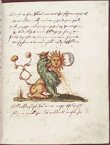
Jaroš
Griemiller z Tøebska, Rosarium
Philosophorum, f. 177r, Prague, 1578
On
remarque dans cette aquarelle du
Ros. Phil.
que l'artiste a rendu cet aspect dual, en combinant d'un
côté les traits du lion et de l'aigle ; et de l'autre
côté en apposant les deux luminaires. La tradition
chinoise, au reste, semble parfois hésiter entre ce
caractère
YIN
et
YANG.
On nous explique que le premier domine à cause de la
prédilection de l'animal pour les retraites sombres et humides.
À cela, nous ajouterons que c'est là, ce genre de
retraite,
où se terre la
prima materia
des alchimistes : le but de
l'oeuvre est, précisément, de la faire accéder au
côté
Yang,
c'est-à-dire de la faire évoluer
de la nigredo au rubeo. Si nous revoyons la gravure du
Mercurius Redivivus,
il ne fait plus de doute que c'est bien là l'opération
mentale qui est proposée ; d'où vient que le crapaud est
parent de l'aigle, ou si l'on préfère, comme le pensent
certaines tribus indiennes d'Amérique du Sud, le crapaud se fait
complice de l'homme pour dérober le feu à son possesseur
atavique : le vautour [
oiseau
d'Apollon, cf. Atalanta XLIII].
Complice du feu, le crapaud est réputé
invulnérable à la morsure du serpent [
il présente des rapports
évidents avec la salamandre] et il faut encore y voir
une analogie avec la belette, insensible au pouvoir pétrifiant
du basilic, cf.
figure XX.
On le voit, symboliquement, le crapaud est l'archétype de
l'Âme restée à un stade primitif, quand l'esprit
n'est pas encore passé de l'ignorance au savoir [
quand la lumière n'a pas encore
surgi des ténèbres, cf. Lux Obnubilata].
Le crapaud purifie l'eau : on est obligé d'y voir une sorte de
psychopompe qui le rapproche du chien des alchimistes qui explique sa
présence « surimposée » aux racines. Il est,
pour ainsi dire, placé à l'origine du monde et il est
assez impressionnant de comparer cette gravure du
Mercurius Redivivus
à la
figure XIV
où l'on a vu une autre origine du monde pour reprendre le titre
de cette peinture que possédait Jacques Lacan. Dans cette
figure, on voit que la symbolique sexuelle est superposable à
celle développée dans le
Mercurius Redivivus
: les racines chthoniennes sont à l'identique de la vulve,
largement ouverte à même la terre. L'examen d'une autre
gravure du Mercurius de Samuel Norton complète la
première : à gauche, apparaissent les
corpora imperfecta avec les
cinq planètes ; à droite les luminaires qualifiés
de
corpora perfecta.
Cette partie souterraine, luciferienne, est dépassée lors
du 2
ème
stade de la conjonction des contraires. C'est là que s'annoncent
les couleurs de la queue de paon. Toutes les planètes sont au
rendez-vous [
entendez par
là les couleurs] en sorte que l'Artiste voit tour
à tour sept fois

l'étoile ou la fleur [
le
Soufre ou le Mercure]. Cette
phase se signale par l'image du mandala qu'on aperçoit
supra.
Le cercle de ce mandala peut être d'épaisseur variable :
certains sont presque virtuels, d'autres « parlent »
beaucoup. Jung a insisté sur l'importance du cercle dans son
Psychologie et Alchimie.
Imago mundi,
c'est l'image propre à conduire celui qui la
contemple à l'illumination. Dans son
Commentaire sur le
Mystère de la Fleur d'Or, le maître de
Zurich revient sur cette
Kunstform.
Le mariage des contraires s'idéalise en un niveau
supérieur [
expression de
Jung]
; nous ajouterons qu'il est assez remarquable de voir le
parallèle mené entre la signifiance de ce cercle magique [
du moins considéré comme
tel en Orient et dans maintes oeuvres médiévales]
et cette 2
ème
phase de la conjonction où Soufre et Sel s'imprègnent par
l'artifice du Mercure. En Occident, la plupart de ces mandalas
renvoient au tétramorphe : en Égypte, Horus et ses quatre
fils sont figurés de la même manière. Dans le
Commentaire,
etc., p. 40-41, Jung se rapproche de manière
singulière de la figure du
Mercurius Redivivus
:
«
La plante est la plupart du temps une
structure aux couleurs
lumineuses, ignées, croissant à partir d'une obscurité située au-dessous d'elle
et portant des fleurs de lumière à son sommet. (Il y a là un symbole analogue
à l'arbre de Noël.) Un tel symbole exprime en même temps la
naissance de la fleur d'or, car, selon le Houei Ming King, « la bulle germinale »
n'est autre que le « château doré »,
le « cœur
céleste », la « terrasse de vie »
[...] la « salle
pourpre de la cité de jade
», le « sombre
passage », l'« espace du ciel antérieur
», le « château
du dragon au fond de la mer ». On l'appelle encore la « région frontière des
montagnes neigeuses », le « passage primordial »,
le « royaume de la
joie suprême », le « pays sans frontières
», et l'« autel
sur lequel sont produits la conscience et la vie
» [
op. cit.]
Que voilà un passage admirable ! Que d'expressions heureuses,
qui doivent combler de joie le disciple d'Hermès et l'amateur
éclairé ! Les passages soulignés ressortissent
d'époques différentes de l'oeuvre, mais de façon
générale elles sont postérieures à la 1
ère
époque, celle des
rizwmata
d'Empédocle. La bulle germinale est ce mandala,
intermédiaire entre les racines et la 3
ème
couronne de
perfection ; cette bulle d'ailleurs tient le milieu entre les natures
minérale et métallique : le minéral se situe aux
racines, comme l'indique la présence des cinq
hiéroglyphes dans la
gravure
n°4 du
Venus vitriolata.
Au sommet, l'or alchimique réincrudé et
rubéfié : au centre, l'athanor ou « château
doré ». Par parenthèse, on trouve une image
semblable, très simplifiée, p. 409 du tome I de la
Bibliotheca Chemica Curiosa
de Manget : c'est ce que Jung appelle
l'Hermès tetracephalus :
«
Dans
les scolies du Tractatus aureus, le symbole de Mercure est un
carré inscrit dans un triangle, ce dernier étant compris
dans un cercle (= totalité). » [
l'Esprit
Mercure, p. 47, op. cit.]
Cette image de la totalité se retrouve, amplifiée, dans
la bulle germinale du
Mercurius Redivivus.
On y trouve les trois principes principiés [
cf. Chevreul
critique d'Artephius] : le
cercle de Mercure ; le
triangle de feu ou Sulphur
et le
carré de Sel.
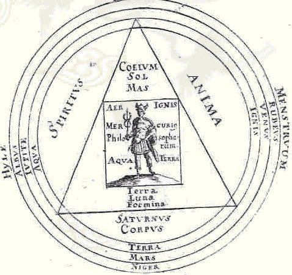
Hermes
tetracephalus,
Alchymiae complementum, et perfectio
Envisagés sous l'angle des
natures, cf. 2
ème article de Chevreul concernant la
Clavis Majoris
Sapientiae, ces trois figures se rattachent au 4
ème
genre dégagé par le chimiste : il s'agit des
corps engendrés des
éléments, à savoir,
1° Le corps de l'âme
corporelle ;
2° Le corps
de l'esprit corporel ;
3°
Le corps corporel du
corps. Ce sont des éléments combinés :
1° = le SOUFRE
quintessencé [
triangle de
FEU]
-
2° = le MERCURE
préparé et animé [
cercle de MERCURE] -
3° = la résine de l'Or [
carré de SEL]. On peut
encore les appeler des
PRINCIPES PRINCIPIÉS. Dans ce coeur
céleste ou vase de nature, opère la Grande Coction.
Mercure s'y trouve fils du soleil et de la Lune, explicitement
marqués [
cf. Venus Vitriolata]
à la partie droite des
rizwmata.
Il s'agit là de leur forme sprituelle puisque le Mercure
participe de leur nature. Mais Mercure est non moins père et
mère du soleil et de la Lune en tant qu'il génère
leur forme corporelle [
4ème
genre de Chevreul] par le biais de leur conjonction : d'un
côté nous avons donc la 1
ère sublimation
[
exprimée vulgairement par
la
viscosité ou gliscroV,
cf.
idée alchimique, V.
] et de l'autre côté la
coagulation ou 2
ème sublimation [
3ème
phase de la conjonction dont nous parlerons plus tard : pegoV, annonçant la
coagulation de l'eau mercurielle].
Si nous reprenons les trois éléments de ce dispositif,
nous avons :
a)- le cercle de Mercure,
avec à gauche marqués : HYLE -
ALBUS - IUPITER - AQUA. Hyle est le nom que Philalèthe donne
à la matière parvenue à la blancheur [albification] mais d'autres y
voient la substance radicale ou humide
radical métallique.
A droite, MENSTRUUM - RUBEUS - VENUS - IGNIS. Ces associations sont
déjà plus insolites mais on peut y trouver deux groupes :
{MENSTRUUM - VENUS } et {RUBEUS - IGNIS}. Toutefois,
l'hiéroglyphe de nous aide
à y voir plus
clair car il associe le O
et la †.
Par le cercle, il désigne expressément l'Ouroboros et le
principe menstruel ; par la croix, le feu : mais rubeus correspond au
roux, couleur se situant entre le rouge et l'ocre : c'est d'un rouge
terreux qu'il est question ici. Voilà qui s'accorde à la
cabale hermétique de belle manière et annonce la stibine
vespérale ,
c'est-à-dire Hesperus : il s'agit
donc de l'AC,
signifiée par la 3ème phase de la conjonction
des principes ou par la 2ème sublimation. Cette croix
est teintée d'impureté [que le lecteur n'y voit surtout pas de
connotation péjorative]
et annonce la rédemption par le feu des hardes laissées
par les minéraux souillés. C'est le feu de
l'Hadès, dépendant d'Héphaistos, couleur
chthonienne. C'est une variation sur le Typhon grec ou le Seth
égyptien, tueur de la lumière, assassin d'Osiris : c'est
le désert où Jésus est resté quarante
jours, pré-écho de la Passion. Fils du ciel et de la
terre [Ouranos et Gaïa],
Seth est évidemment
assimilé à Saturne : il n'est pas indifférent
à notre propos qu'on lui prête dans la main droite l'ankh
et dans la main gauche le sceptre Ouas [ce bâton est associé au
renard, cf. Douze Clefs de
Philosophie],
deux symboles annonçant l'Aurore. On dit que Moïse se
servit du bâton Ouas pour faire sourdre de l'eau d'un rocher :
voyez ici l'Escalier des Sages
de Van Helpen :
« L’Or
même, qui est le plus pesant de
tous les métaux, peut être réduit, par cette
purification
ou Cepthar, à
une cendre si fine et si légère
qu’il
peut même nager sur l’eau comme la cendre commune, de la
même
manière que Moïse a sans doute pulvérisé le
veau
d’or qu’il a épars sur l’eau comme il est a voir au
Deutéronome
Chap. 9. V.21 [...] » [chapitre III]
Dans le même ordre d'idées, il y aurait une relation
à établir entre le chêne séculaire dont le
tronc se voit en arrière plan, cf.
supra et le
Djed, symbole
attribué à Osiris, rappelant le tronc de l'arbre qui lui
servit de refuge avant qu'il ne ressuscite : ce refuge est cette
terrasse de vie évoquée par Jung dans son
Commentaire.
Aussi bien faut-il voir dans notre carré de SEL l'incarnation de
l'esprit dans la matière, le principe reliant la terre au monde
céleste. En bas de notre monade, nous trouvons : TERRA - MARS -
NIGER. Nouvelle énigme, dans la mesure où
est
lié au feu et non à la terre. Si l'on tient compte,
toutefois, de l'iconographie alchimique et de l'avis des mythographes,
on peut dire ceci : que Mars, sans être dieu de la
végétation, protège les moissons et qu'il est
salué par l'épithète de « dieu du printemps
», ce que l'on retrouve du reste dans le bel emblème de
Limojon de saint Didier [
Triomphe
hermétique] ou dans les planches du
Mutus Liber.
C'est aussi le dieu du serment ; aussi dans notre bulle germinale,
faut-il voir l'alliance cosmique des principes, qui,
d'élémentaires qu'ils étaient {
,
}
deviennent principiés [ou principiants] {
,
}. Arès scelle
de son épée la conjonction, ce dont témoigne le
Caput mortuum initial :
«
la dissolution est la solution de la
conjonction. »
; on trouve dans cette étonnante synthèse tous les
pouvoirs du feu : ardeur, purification, illumination. Dans l'
Atalanta fugiens,
l'
emblème XLI exprime ce passage
où le blanc est coloré en rouge. Dans l'
Aurora Consurgens,
une aquarelle où l'on voit le second Adam sortir du tombeau
exprime, là encore, ce retour corporel de la conscience
dissipée. Il s'agit de la
figure XXXVII.
Pour finir sur Mars - à qui en l'occurrence il vaut mieux donner
son nom d'Arès pour être conforme avec la logique de la
cabale - cet extrait d'un
Hymne
homérique :
«
Arès
souverainement fort... cœur vaillant... père de la Victoire qui
clôt heureusement les guerres, soutien de la Justice, toi qui
maîtrises l'adversaire et diriges les hommes les plus justes...
dispensateur de la jeunesse pleine de courage... entends ma
prière ! Répands d'en haut ta douce clarté sur
notre existence, et aussi ta force martiale, pour que je puisse
détourner de ma tête la lâcheté
dégradante, réduire en moi l'impétuosité
décevante de mon âme et contenir l'âpre ardeur d'un
cœur qui pourrait m'inciter à entrer dans la mêlée
de glaciale épouvante ! » [
Hymnes
Homériques, trad. J. Humbert, Paris, 1936]
De
quoi est-il question ici, sinon de la résurgence de l'âme
? Basile Valentin ne dit-il pas qu'il vaut mieux «
déchirer
ses livres si l'on ne veut pas déchirer son coeur »,
expression mal traduite que nous avons eu l'occasion de citer plusieurs
fois, tant sa signifiance est importante. Qu'est-ce donc que cette
impétuosité décevante, si ce n'est ce reste du
premier Mercure ? Le Mercurius représente l'un des
archétypes du « manque » tant il s'avère
difficile à visualiser, tant son corps est subtil. Or, cette
matière - si l'on peut ainsi qualifier ce qui n'est qu'un Esprit
- est si importante dans les conceptions sur la structure de cette 2
ème
phase de la conjonction que l'Adepte confirmé peut seul lui
permettre de
prendre peu à peu corps. L'interaction entre ce médiateur
et les principes [
Soleil, Lune]
est telle que l'on ne sait au juste si elle ressortit d'un effet ou
d'une cause : en effet, on se trouve dans un cas de figure d'un
système de type dissipatoire, non linéaire, où le
principe de réversibilité suppose une
réciprocité des effets et des causes, concept qui vient
à manquer avec le Mercure des alchimistes ; on se voit donc
obligé afin de faire tenir la symbolique dans un cadre normatif,
d'élever des principes généraux comme
substitution du réel : cette conception a d'ailleurs sa source
dans les premiers développements de la science moderne qui,
notons-le bien, est pratiquement inséparable des scolastiques
médiévaux et des rudiments de la philosophie moderne.
Mais si, dans le domaine de la physique, on peut comprendre que des
principes - des allégories pour ainsi dire - correspondent
à une pensée du réel - indépendant de
l'esprit humain - il s'agit d'abstraction simplificatrice de la
réalité. Dans le vase clos des alchimistes, le
problème est le même : la difficulté de la
compréhension du processus alchimique tient à ce que les
Adeptes ont utilisé un langage vulgaire pour formuler des
expériences qu'ils ne pouvaient pas comprendre ; loin donc d'y
voir un langage abscons faut-il y deviner la formulation la
plus claire qu'ils étaient capables d'exprimer puisque ce qu'ils
voyaient
était inconciliable - au plan phénoménologique -
avec le paradigme de leur époque. De façon inverse, il
semble que Jung se soit déporté dans un domaine
entièrement relatif à la psychologie en oubliant
totalement le creuset ou le matras scellé qui, pour lui,
n'existent pas... Les alchimistes ont donc bâti des semi
fictions, qui ne correspondaient pas à de pures
spéculations mais bien au contraire à des faits
observés, ou même plus, à des expériences
vécues du plus profond de leur être : en tant que telles,
ces expériences renvoyaient les alchimistes à
procéder à de libres créations en rapport avec
leur inconscient et c'est le point où nous rejoignons
entièrement le discours de Jung. Cette digression pour faire
comprendre le sens à donner à cet extrait de l'
Hymne
Homérique. Quand on sait, de surcroît, que
l'Hymne est
dédié à Déméter, on comprend mieux
la liaison entre Mars et la Terre et, partant, avec la nigredo.
Cette
2ème phase de la conjonction a fort à voir
avec la sublimation, comme on peut le voir sur cette aquarelle du Ros. Phil.
comme sur la figure
XXXVII
de l'AC.
C'est l'époque où l'Âme change de lieu
: ce mystère est souvent voilé par l'allégorie de
l'enlèvement de Perséphone. Voici à cet
égard que qu'écrit Pernety :
« Établi
dans l’Enfer ou sa partie inférieure du vase, Pluton
était comme méprisé des Déesses qui
faisaient leur séjour avec Jupiter dans la partie
supérieure. Il se trouva donc dans la nécessité
d’enlever Proserpine de la manière que je l’expliquerai dans le
Livre suivant. La situation du Royaume de ce Dieu fit feindre qu’il se
précipita avec elle dans le fond d’un lac ; parce que cette
terre, après s’être sublimée à la superficie
de l’eau mercurielle, se précipite en effet au fond d’où
elle était élevée, lorsqu’elle est parvenue
à la couleur blanche
désignée par le nom de Perséphone, de Proserpine. »
[Fables
Egyptiennes et Grecques, tome II, vi]
On voit que la blancheur est associée à la fille de
Déméter ; à la fille de Cronos et Rhéa
revient la nigredo [Melaina, la Noire ainsi
nommée car elle s'était retirée au fond d'une
caverne].
Les petits corbeaux, qu'on voit disparaissant, illustrent ce point de
science, de même que l'âme qu'on voit émerger de la
nuée. Platon a écrit que Perséphone «
donne la nourriture comme une mère » et il
s'agit, au vrai, du Lait de
Vierge
d'Artephius. Il y a donc lieu de voir dans Perséphone
l'équivalent de l'éclipse de Soleil, la sublimation du
Soufre [cf. la liaison entre la
déesse et la grenade : en particulier dans plusieurs
emblèmes commentés de l'Atalanta fugiens
; saint
Grégoire-sur-Vièvre].
b)- le triangle de Soufre.
Inscrit dans le cercle tripartite, le graveur a pris soin d'en faire
déborder les angles sur le cercle intérieur, là
où sont inscrits les trois éléments : AQUA - TERRA
- IGNIS. Nous avons déjà parlé de ce
problème conceptuel des quatre éléments dans l'idée alchimique, V
à propos des tableaux que donne Chevreul. Le Mercure, on le
rappelle, est un principe principiant formé d'eau et de feu ; la
terre qui y est infusée est à l'image de Proserpine :
elle seule a pouvoir de donner naissance à l'AIR de FEU dont
nous parlions tout à l'heure. Déméter va
rechercher sa fille par tous les moyens : elle ira notamment demander
aide et asssitance à Kéléos [KeleoV],
roi d'Eleusis. Déméter chercha à la retrouver en
parcourant le monde pendant neuf jours et neuf nuits, un flambeau dans
chaque main, sans manger ni boire ni se baigner ni se parer. Sous
l'aspect d'une vieille femme, elle s'assit à Eleusis sur la
« pierre sans joie. »
C'est là que Baubô, la femme-vulve,
la fit rire. Quelle
n'est pas notre surprise, de voir en Baubô ou la Bubastis de
l'Égypte ptolémaïque, cette mystérieuse
apparition de la figure XIV dans laquelle
nous avons pu, pour d'autres raisons, deviner une allégorie de
l'origine du monde !... [cf.
infra sur Baubô, femme de Dysaulès].
Ce n'est pas tout : KeleoV,
roi d'Eleusis, est homonyme de keleoV,
le pivert. C'est un oiseau sacré qui apporte le feu aux premiers
hommes [par cabale, la Terre se
métamorphose en Air de Feu que
nous venons d'évoquer] ; le pivert était
célèbre pour ses dons de divinisation et honoré
comme oiseau prophète, ce qui le rapproche d'Hermès : il
guidait les voyageurs sur les routes et apportait leur nourriture
à Rémus et Romulus ; enfin, il était
consacré à Mars. En alchimie, on peut donc le
considérer comme l'un des symboles de la réincrudation [il
creusait des trous sous les arbres et pour Jung, c'est la
rentrée dans la mère - Virgo paritura - que figure cet
oiseau secourable]. Cette digression sur Déméter
et Baubô nous facilitera la compréhension du sens des
autres arcanes du triangle. Nous passerons rapidement sur SATURNUS -
CORPUS dont l'association ne pose aucun problème, en raison de
la nigredo. De même, CORPUS - SPIRITUS - ANIMA forment les grands
arcanes des alchimistes : SEL - MERCURE - SOUFRE. Dans le triangle, en
haut, le Ciel est lié au Soleil et à
l'élément masculin [COELIUM
- SOL - MAS.] ; en bas, la Terre est liée à la
Lune et à l'élément féminin [TERRA - LUNA - FOEMINA] :
voilà qui mérite une explication complémentaire :
le triangle combine le FEU [exprimé
sous forme ésotérique par l'hiéroglyphe
consacré], la TERRE et le CIEL [exprimés sous forme
exotérique]. Le rébus spirituel est aisé
à reconstituer : il s'agit de la Tabula Smaragdina,
formulée par arcanes. Que dire d'autre sur ce triangle ? Il est
équilatéral, ce qui a le sens de divinité et
d'harmonie : il annonce la Terre que symbolise le carré central [profitons-en pour noter d'ailleurs ce
qui semble être une incorrection en termes de cabale de l'emblème XXI de l'Atalanta fugiens
: Johann Theodor de Bry n'aurait pas dû inclure un cercle dans le
carré inscrit dans le triangle où figure le couple
alchimique : il y a redondance.]. Jung ajoute :
«
Dans la quatrième parabole (Aurora, I, début du chap. IX)
un parallèle est également tiré avec la
Trinité [...] : " ... comme est le Père, ainsi est le
fils et ainsi le Saint-Esprit, et ces trois sont un : corps, esprit et
âme ; car toute perfection repose sur la triade,
c'est-à-dire sur la mesure, le nombre et le poids." »
[Psychologie
et Alchimie, p. 495]
Le Mystère
de la Sainte-Trinité est un autre ouvrage
où l'iconographie, admirable, vient étayer le texte :
c'est l'un des premiers grands traités en langue allemande, et
en même temps le plus représentatif de l'alchimie du Moyen
Âge [Wilhelm
Ganzenmüller, Das
Buch der heiligen Dreifaltigkeit. Eine deutsches Alchimie aus dem
Anfang des 15. Jahrhunderts, Beitrag zur Geschichte der Technologie und
der Alchemie, Weinheim, 1956, p. 231-272, cité in Alchimie, Histoire,
Technologie, Pratique, Belfond, 1972]. Nous en parlerons
peut-être un jour... Pour terminer avec le triangle, il constitue
donc le symbole du Sulphur
dont les trois maîtres sont Jupiter Ammon,
Lune
mercurielle  et
Soleil. On peut encore y voir un ensemble comportant un trône [puissance, symbolisant le sel de
liaison = Ammon, Jupiter ], un livre [l'intelligence, c'est-à-dire
l'esprit = Lune mercurielle] et enfin, une colombe [le sulphur en forme de sanctus spiritus
qui n'a aucun rapport avec l'intelligence mais se rapproche de
l'âme sublimée = ].
Enfin, on
attirera
l'attention du lecteur sur les trois tours de la planche XIV du Mutus Liber
: elles expriment une vieille coutume qui consisitait, quand on
hésitait sur une route à choisir, à faire trois
tours sur soi-même et à adopter au 3ème
tour la direction vers laquelle le visage était orienté :
il s'agit là, on en conviendra, d'une pratique absolument
irrationnelle. La Kabbale hébraïque se montre pour une fois
d'accord avec la cabale hermétique : elle assigne le principe
agissant, cause ou sujet de l'action à l'esprit [qui est actif, ce qu'il faut relever
puisque Jung, par exemple, affirme que le
est un
élément passif ; c'est manifestement une erreur puisqu'il
sert de médiateur entre Sol et Luna] ; l'action de ce
sujet est son verbe [il
correspond à l'âme, c'est-à-dire au Sulphur : il
est passif par rapport au sujet en ce qu'il est guidé par le
psychopompe mais actif par rapport à l'objet]. Enfin,
l'objet de l'action [la Grande
coction], avec son effet attendu : l'escarboucle des Sages [l'objet correspond bien sûr au
corps qui est passif et sert de prison au rayon igné solaire que
constitue le verbe].
et
Soleil. On peut encore y voir un ensemble comportant un trône [puissance, symbolisant le sel de
liaison = Ammon, Jupiter ], un livre [l'intelligence, c'est-à-dire
l'esprit = Lune mercurielle] et enfin, une colombe [le sulphur en forme de sanctus spiritus
qui n'a aucun rapport avec l'intelligence mais se rapproche de
l'âme sublimée = ].
Enfin, on
attirera
l'attention du lecteur sur les trois tours de la planche XIV du Mutus Liber
: elles expriment une vieille coutume qui consisitait, quand on
hésitait sur une route à choisir, à faire trois
tours sur soi-même et à adopter au 3ème
tour la direction vers laquelle le visage était orienté :
il s'agit là, on en conviendra, d'une pratique absolument
irrationnelle. La Kabbale hébraïque se montre pour une fois
d'accord avec la cabale hermétique : elle assigne le principe
agissant, cause ou sujet de l'action à l'esprit [qui est actif, ce qu'il faut relever
puisque Jung, par exemple, affirme que le
est un
élément passif ; c'est manifestement une erreur puisqu'il
sert de médiateur entre Sol et Luna] ; l'action de ce
sujet est son verbe [il
correspond à l'âme, c'est-à-dire au Sulphur : il
est passif par rapport au sujet en ce qu'il est guidé par le
psychopompe mais actif par rapport à l'objet]. Enfin,
l'objet de l'action [la Grande
coction], avec son effet attendu : l'escarboucle des Sages [l'objet correspond bien sûr au
corps qui est passif et sert de prison au rayon igné solaire que
constitue le verbe].
c)- le carré de Sel.
Hermès trône en majesté, avec de part et d'autre :
AER - IGNIS : l'Air Inflammable que les chimistes modernes ont traduit
par hydrogène. Bien sûr, le feu secret des alchimistes
n'est pas l'Air du Feu de Stahl.
Néanmoins, on ne peut pas, non
plus, affirmer que la materia prima ne contienne point
l'élément le plus simple de l'univers ! En bas de
l'emblème, les deux
autres éléments : AQUA - TERRA. Cette association ne
paraît pas évidente a priori ; si l'on y
réfléchit, elle s'inscrit en toute logique dans le projet
du Mercurius
Redivivus. Que recouvre la monade { -
-  } ? De
la
viscosité dont la forme naturelle est la lave [cf. l'emblème
XXXVII de l'Atalanta
où l'on devine les champs phlégréens,
derrière le Lion Vert, avec en arrière plan, le
Vésuve] et qui débouche sur la fixation [i.e. la 2ème
sublimation qui est celle de l'Esprit]. Jung écrit :
} ? De
la
viscosité dont la forme naturelle est la lave [cf. l'emblème
XXXVII de l'Atalanta
où l'on devine les champs phlégréens,
derrière le Lion Vert, avec en arrière plan, le
Vésuve] et qui débouche sur la fixation [i.e. la 2ème
sublimation qui est celle de l'Esprit]. Jung écrit :
« La sixième parabole (Aurora, I,
chap. XI) dit : " Il est
écrit dans la Turba : la terre porte
tout parce qu'elle est
lourde ; elle est le fondement de tout le firmament parce qu'elle
apparut ferme lors de la séparation des éléments.
» [op. cit., p. 496]
C'est cette terre qui apparaît comme la terrasse de
vie du Yi-King, comme la Délos où Latone trouve le salut
qui lui permet d'échapper à l'emprise de Seth-Python. Ce
n'est pas sans raison que Platon considérait le carré
comme étant un en soi absolument beau ; contrairement au cercle,
lorsqu'on inscrit une croix dans un carré, on obtient 4 autres
carrés, puis, 16, 64, etc. selon une progression
géométrique d'ordre 4
n où n est le
nombre de
†.
On est conduit à admettre que le carré possède une
structure fractale. Pour le cercle, la progression obéit
à 4
(1+n). Idem pour le triangle
(équilatéral). Dans le cas du carré, le centre
n'apparaît donc que comme un cas particulier puisqu'il suffit de
démultiplier les carrés inscrits dans le premier pour que
ce centre disparaisse. Il réapparaît en revanche, si l'on
inscrit un cercle, préalablement à ce que nous avons dit.
C'est dans cette vision que l'on a fait du nombre quatre la perfection
divine puisqu'il rejoint la conception du
EN TO PAN de la
Chrysopée.
Cela nous amène tout naturellement au concept de quaternaire :
on y voit d'habitude la progression arithmétique des quatre
premiers nombres ayant l'unité comme premier terme et comme
raison : 1.2.3.4. Mais il nous semble que cette conception, sous
l'angle hermétique, est trompeuse. Les alchimistes, au cours du
développement de leur androgyne, rencontrent un moment de
l'oeuvre où se manifeste ce qu'ils nomment la multiplication [
ou l'accroissement]. La
planche XIII du
Mutus Liber
décrit fort bien ce processus et il s'agit d'une progression
géométrique qui nous amène à
reconsidérer le quaternaire sous l'angle du ternaire : 1.2.3 = 4
3
= 64 dont la somme est 10, renvoyant à la Décade, symbole
de la perfection [
dans cette
opération, il faut avoir à l'esprit que le cercle o : 1 inscrit la croix † : 2. Le 3ème
élément ne peut être que le triangle D : 3. De là, le carré.].
La Terre ou carré annonce la conjonction radicale, terme de la 2
ème
phase, marquée par l'incarnation des principes célestes
; aussi peut-on voir une sorte d'
Athena salpinx [
salpigx,
épithète d'Athéna à Argos] dans
l'oiseau
à tête rouge que présente le
folio 105r du
Ros. Phil.,
que l'on retrouve, à l'identique, dans la
figure
II de l'
AC.
On remarquera que l'oiseau, une chouette
selon toute apparence, est juchée sur une colline, autre signe
de la
conjonction. C'est l'oiseau consacré à la lumière,
désigné comme «
celle
qui resplendit ». La chouette annonce par son
buccin la naissance prochaine du
phénix
; Ovide rapporte que la potion préparée par
Médée comportait des ailes de
chouette : ayant bu ce
breuvage, le vieil Aeson rajeunit de quarante ans [
cf. aussi Pélops, appelé
deux fois pubère : remarquez le rapport entre le 1er
et le 2ème Adam, rapporté à la forme du
Mercure, cf. Atalanta XLIV
; Fontenay ; humide
radical métallique à propos de Pélias ; Introïtus IV
-]
: n'y a-t-il pas là un parallèle évident avec les
vertus tant vantées par les alchimistes sur le
lapis
considéré comme
alexipharmacon
? Nous sommes ici à
la croisée des chemins où le mythe rejoint l'Art
sacré. Pélops [
Peloy] est
fils de Tantale, fils de Zeus et de la nymphe Plouto [
Ploutw,
Océanide, compagne de Coré ; observons d'ailleurs le
petit trait de cabale entre Ploutw
et ploutoV qui
désigne les richesses du coeur ou de l'âme, à
comparer avec Plouton,
dieu des Enfers mais aussi PloutoV,
dispensateur des richesses : il y a là un jeu de scintillement
qui n'aura pas échappé au disciple
d'Hermès]. Tantale est ce roi de Phrygie qui servit
à Zeus son propre fils, Pélops : le crime fut
éventé par le roi de l'Olympe, Pélops
ressuscité par Hermès et sa peine est connue de tout le
monde : le supplice de Tantale ! Cette fable en dit long sur notre
sujet, qui est l'incarnation de l'âme ou plutôt sa
résurgence. En ce sens, Pélops symbolise la
matière de l'oeuvre, d'abord soumise au creuset puis renaissant
de ses cendres et subissant, au cours de son parcours aux Enfers, mille
métamorphoses comme paraît l'indiquer l'aquarelle
suivante, où l'on peut voir une variante de la
figure II :
Un peu moins dramatique que la grande
figure II,
celle du
Ros.
Phil.
est plus « lisible ». Le personnage a toujours un masque
luciférien : l'un de ses pieds est un sabot, l'autre une sorte
de palme. Dans cette variation, il a abandonné le violon et joue
du buccin ; le violon toutefois est toujours présent, sous la
forme du signe du Cancer qui annonce la permanence mercurielle. Du bras
gauche, il porte une flèche - celle du Sagittaire - et aussi une
faux - celle de Cronos. Une queue de poisson termine d'en faire un
zodiaque incarné. Quant au petit oiseau noir, il rappelle en
tout point celui que l'on aperçoit à la
figure VI, le même encore que l'on voit
dans la
figure XI du
Splendor Solis,
là où le Roi va au bain [
l'oiseau
est blanc ou noir selon les versions ; précisément, ici,
nous avons à la fois le corbeau et la colombe et l'on
connaît les
rapports entre l'AC
et le Splendor Solis, alias Toyson d'Or de
Salomon Trismosin, pseudo].
On distingue encore un cynocéphale à droite et le couple
alchimique, en arrière plan tel qu'il est
représenté dans la version classique du
Ros. Phil.
Cette chimère est juchée sur un globe, sorte d'
imago mundi et
derrière, on devine un crâne. On peut trouver un rapport
entre Pélias et Pélops : Médée, cf.
supra,
incita les filles de Pélias à couper leur père en
morceaux et à le faire bouillir sous le prétexte de le
rendre immortel [
mythe
récurrent depuis Osiris]. Là encore, la
figure X du
Splendor Solis
montre une scène tout à fait superposable. Ce
démembrement est requis pour la purification par laquelle va
s'opérer le rajeunissement et la réincrudation [
Aureum Vellus
Rorschach 1599, p. 185 et 187]. Le texte de la
Turba se
poursuit ainsi :
«
Quand donc cet être corruptible aura
revêtu l'incorruptibilité et que cet être mortel
aura revêtu l'immortalité, alors s'accomplira la parole de
l'Écriture : la mort a été engloutie dans la
victoire.
où est-elle, ô mort, ta victoire ? [...] »
On croirait se trouver en face du
Sermon sur la Mort
de Bossuet... Nous voilà dans ce « sombre passage »
évoqué dans le texte du Yi-King, cf.
supra.
La nature d'un composé ne se dévoile jamais mieux que
dans la dissolution de ses parties, dit Bossuet, et nous tenons, avec
l'aquarelle du
Ros. Phil.
comme une sorte «
d'écorché » du Compost philosophal : ces
matières sont disposées à la
génération, conçue sous l'angle de la sublimation,
qu'imprime le cercle, qu'exprime le triangle et que résout le
carré en extrayant, pour ainsi dire, la racine
chthnonienne en vue de la métamorphoser en pur cristal et rendre
le diaphane
transparent. Dans l'
Arbre
Philosophique, l'un des chapitres les plus
importants des
Racines de la Conscience
[
Buchet-Chastel, 1971],
Jung a exprimé en somme, le contraire du processus
d'individuation tel qu'il est exposé par les alchimistes :
«
[...]
il décrit, sous la forme d'une projection cosmique, la
séparation de l'anima féminine d'avec un conscient
masculin orienté vers le domaine spirituel et tendant à
l'absolutisme [...] Ce développement et cette
différenciation de la conscience ont trouvé leur
expression littéraire dans les Métamorphoses
d'Apulée et en particulier dans le conte Amour et Psyché [...]
» [
p. 442-443]
Il n'entre pas dans nos vues de livrer une exégèse sur ce
conte [
cf. Atalanta XLV]
; néanmoins, plusieurs points sont là encore à
noter, allant dans le droit fil de nos réflexions sur les
transformations que subit la materia prima dans le vase de nature. Dans
les
Métamorphoses,
Apulée raconte que Psyché était la plus ravissante
des trois filles d'un roi [
on
peut voir une ressemblance avec la légende qui fut à
l'origine de la guerre de Troie, cf. Atalanta et
Pernety, Fables
Égyptiennes et Grecques, t. II.
D'ailleurs l'une des versions de l'AC
présente une aquarelle où l'on voit Paris, Aphrodite,
Athéna et Héra. Dans son Psychologie et Alchimie,
Jung fait référence à cette version sous le titre De Alchimia].
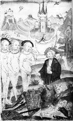
jugement de Paris, Cod. Voss. Chym. F. 29, Leiden [cliquez
pour agrandir]
Vénus en conçut du ressentiment et dépécha
son fils, Cupidon, afin qu'il inspire à Psyché de l'amour
pour le plus méprisable, le plus abject et le plus laid des
hommes. La légende veut que Cupidon n'ait point
décoché sa flèche : il fut subjugué -
à l'instar des effets produits par Orphée jouant de sa
lyre -
par la belle Psyché ; celle-ci connaîtra les avatars de la
prima materia : on l'habille de noir et, au sommet d'une colline, elle
est promise à l'union avec un sombre serpent hideux qui prend
les traits de Seth - Python. Mais Zéphyre qui veille [
Zéphyre et Eros sont
congénères en bien des points] souffle sur
l'Aquilon - cf. l'une des
aquarelles
du Livre d'Abraham Juif - et la nymphe se trouve transportée
dans une île qui ressemble à s'y méprendre à
celle que décrit Cosmopolite dans sa
Nouvelle Lumière
Chymique ou encore à celle de Bernard Le
Trévisan dans le
Songe Verd.
Psyché est alors menée dans une sorte de palais d'or,
incrusté de pierreries où l'on devine le «
château doré » mentionné dans le Yi-King, cf.
supra. Les alchimistes parlent
dans leur jargon secret du Palais fermé du Roy, clos par
une porte magique, qui fait l'objet d'une analyse de Fulcanelli, cf.
Gobineau et dont Michel Maier parle aussi
dans l'
emblème XXVII
[
dont nous avons illustré
le commentaire avec des gravures du Vinaigre des Sages
de Goossen Van Vreeswijk, 1675] de l'
Atalanta fugiens.
C'est donc dans ce palais clos que Psyché va s'unir avec un
amant qui n'est autre que... Cupidon ! Cupidon qui lui a interdit
d'ouvrir les yeux ; bien sûr, Psyché enfreindra
l'interdiction et condamnera le fils de Vénus à
disparaître [
reprise du
mythe, célébré par Monteverdi, d'Orfeo et Euridyce].
Psyché, désespérée, s'en va voir
Vénus qui lui impose des travaux bas et dégradants : il y
est question de points de science que nous ne pouvons, hélas,
détailler ici : laine d'or de mouton, eau du Styx qu'elle
parvient à puiser grâce à un aigle ; elle
réussit encore à apprivoiser Cerbère et parvient
jusqu'au centre du labyrinthe d'Hadès, c'est-à-dire
jusqu'au trône de Coré [
équivalent du labyrinthe de
Salomon, cf. Gardes du Corps].
Revenue du royaume des Ombres, elle commet l'erreur d'ouvrir une
boîte que lui avait remise Coré [
comparez avec la boîte de Pandore]
qui la plonge dans un profond sommeil [
sublimation]. De son
côté, Cupidon, lui aussi enfermé, s'échappe
et rejoint la belle au bois dormant qu'il éveille d'une
piqûre : c'est la conjonction des principes qui est
réalisée. La leçon que l'on peut tirer de ce conte
est la suivante et elle trouve sa place dans ce commentaire sur l'
AC
: Psyché est semblable à la fleur épanouie sur
laquelle souffle Zéphyre et dont il dissipe la toison d'or [
le pollen où l'on peut voir une
allégorie de la semence d'Ouranos quand Saturne eut porté
une main sacrilège sur son père, cf. humide radical]. On peut
l'identifier à la fleur de nitre, partie mercurielle de la
materia prima, et il faut noter que Psyché joue aussi le
rôle de l'Âme, c'est-à-dire du sulphur, d'abord
impur et souillé, puis dépuré lors de son «
réveil », aurore de l'oeuvre :
Auro hora si l'on veut
bien. Cupidon ne joue là que le rôle d'un catalyseur et
c'est Vénus qui fait tourner la roue.
, Lucifer,
étoile du matin, par le sulphur, se transforme le soir en
stibine [
Gaïa
hermétique], en Hesperos
où
il
faut, sans doute,
voir l'aurore réelle de l'oeuvre, proprement
crépusculaire. La figure de Cupidon est développée
par Jung dans ses
Essais sur la
Symbolique de l'esprit :
«
En tant que Cupidon et Cyllenius, [le
Mercure] est un séducteur qui pousse au développement
dans l'univers des sens ; il est la benedicta viriditas et le
multiflores du
printemps juvénile (...] C'est un Hermès Chthonios, et
un Eros en même temps, duquel naît cependant au terme de sa
course à travers le monde le lumen superans omnia lumina, la lux
moderna, car le lapis n'est rien d'autre que la figure de la lumière cachée dans
la matière. » [
op. cit., p. 68]
Cet Hermès Chthnios est inscrit dans le carré central du
Mercurius Redivivus
: c'est l'
Hermès
tetracephalus
ce dont attestent les noms des Éléments dans ce
carré, entourant l'Hermès. Ce Tetraktys
représente comme une épiphanie du Tétramorphe
comme nous l'avons noté ailleurs [
cf. Hôtel
Lallemant à Bourges, Tarot
alchimique]. Du reste, Fulcanelli, dans le
Mystère des
Cathédrales, termine l'ouvrage en posant en
dressant en rébus l'image de frontispice du Sphinx d'Egypte :
SAVOIR
[SPIRITUS ] -
VOULOIR [LEO VIRIDIS ] - OSER [AQUILA
] - SE TAIRE [TAURUS ].
Il est temps de passer à la dernière partie de notre
arbre, au faîte,
qui arbore deux fleurs, la 3
ème
couronne de perfection et porte la
. Rien
sans doute ne
peut
mieux illustrer la coagulation du Mercurius que l'action
imprimée par Borée [
Aquilon].
C'est de là que
naît le lapis, dans une lueur crépusculaire, quand les
sept boeufs de labour ont terminé leur ouvrage. C'est ici que le
vent solaire imprime à l'Air la pollinisation des particules que
la magnésie imprime en cette partie de l'
imago mundi. Aussi ne
faut-il pas mépriser l'opinion vulgaire qui attribue l'aurore
boréale aux vapeurs et exhalaisons terrestres [
il est entendu que nos propos doivent
être entendus cum grano sali].
Quelque ténues, quelque subtiles que soient, en cette
prodigieuse hauteur, les parties grasses, sulfureuses et inflammables
du
, c'est bien dans la stibine qu'il faut aller
chercher,
au
crépuscule vespéral, la matière du lapis. C'est
dans la même optique que Monte Snyders voyait, dans les
comètes [
cf. la Métamorphose
des planètes] des exhalaisons terrestres,
subtiles et lumineuses dont on s'est fait l'écho dans l'
humide radical. Au reste, si
l'on reprend l'étymologie de Météore [
Ouranion],
son origine hermétique ne fait aucun doute et l'astronomie
moderne semble même assurer que la vie viendrait, pour partie,
des produits cométaires. Suivant l'illustre Van Helmont,
l'archée céleste, par son seul pouvoir, tire tous les
corps de l'eau du Styx [
cf.
Psyché et Amour]
: principal fleuve de l'Hadès - le Mercurius senex des
alchimistes - il ceint de ses méandres le royaume des Enfers,
à l'instar du serpent qu'on voit représenté sur la
figure du
folio 42r. Styx,
initialement est une nymphe [
Psyché
en forme de Virgo paritura] qui, unie à Pallas [
sulphur] lui donne quatre
enfants [
Tetractys] :
ZhloV [
l'ardeur = TAURUS ],
Nikh [
épithète
d'Athéna : il faut y voir l'AIR allié à la
lumière, c'est-à-dire l'ÂME ou
SULPHUR
sublimé = AQUILA , cf. aussi
section
sur Chevreul, critique de Niépce],
Bia [
la Force = LEO ] et
enfin
KratoV [
puissance = SPIRITUS au sens du
Mercurius, grand ordonnateur]. Quand Zeus entra en lutte contre
les Géants [
précipités
dans le Tartare],
les enfants de Styx, qui s'étaient ralliés à son
côté, furent récompensés : ils
demeurèrent perpétuellement auprès de lui pour
l'assister. Quand un dieu s'apprêtait à jurer par Styx,
Iris [
le signe de la conjonction,
par les couleurs du paon, cf. figure XV]
allait chercher une coupe pleine de l'eau pontique du fleuve de
l'Hadès. En cas de parjure, malheur au menteur ! Condamné
à ne plus s'abreuver au nectar et à goûter à
l'ambroisie d'une part ; d'autre part chassé du cercle divin
pour neuf ans. Il vient de là que Styx [
stux : froid, glacial]
fut surnommée le « grand serment des Dieux » ou
encore le « fleuve terrible du serment ». Ne peut-on y voir
le tronc de notre
chêne
qui se déroule depuis le centre de la Terre [
Hadès] jusqu'au
delà du firmament [
Zeus]
? L'archée, disions-nous, peut donc soutirer les corps
résolus en cendres de l'eau mercurielle pour autant que le
ferment existe [
Chevreul a
parlé de ce ferment dans ces études alchimiques sur Artephius et Cambriel].
Ce ferment est le moyen ou artifice secret qui permet la
réincrudation du Soufre : il attire l'esprit
générateur de l'archée et constitue l'
aura vitalis. Il
crée les corps organisés [
i.e. cristallisés]
à son image, par
adaptation
: on retrouve l'idée de la
Table d'Émeraude.
Ce ferment est une partie du sulphur, matière composite dont
Fulcanelli a bien vu, dans les
DM,
qu'une partie en était blanche, l'autre noire, l'autopsie de
la pièce révélant que le
Caput en était
violet [
ion -
ioV].
Il est aussi le véritable fondement de l'augmentation - que les
textes appellent la multiplication - du corps créé
de novo, qui entre alors
pour la deuxième fois en fermentation, ce qui explique la
redondance apparente des gravures du
Ros. Phil.
[
le spiritus gagne deux fois le
ciel, cf. AC,
figure
XXXVII].
L'archée agit sur le ferment à la manière d'un
aura seminalis
; Van Helmont admettait dans ce ferment une susbtance
qu'à l'exemple de Paracelse, il nomme
Pessas et il appelle
Bur le ferment
métallique. Borée joue dans la Grande Coction une grande
importance au
moment où l'Artiste juge à propos de diminuer la
température de son fourneau, en sorte que son eau permanente se
coagule de proche en proche, et de façon insidieuse. C'est la
condition sine qua non pour que l'Aurore apparaisse ; aussi bien nous
faut-il une matière terrestre ou aérienne capable de
darder, en dépit de la ténuité de ses parties, une
lumière aussi vive ou plus vive même que les
Météores communs [
tonnerre,
feux-folets, Iris, parhélies, etc. qui ne sont en somme que de
pâles reflets du Soleil des Sages et qui relèvent de la
spagyrie spirituelle]. C'est d'une source active dont nous
avons besoin, qui réclame la collaboration des
éléments que nous avons énumérés
quand nous avons examiné la
bulle
germinale du
Mercurius
Redivivus. Mais ici, nous recherchons le « royaume
de la joie suprême », qu'on trouve stylisé dans
cette figure, tirée d'un traité de Lacinius.
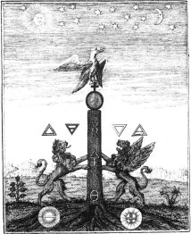
illustration tirée de :
Pretiosa margarita, Giovanni LACINIO,
Leipzig, 1714
Cette gravure va nous permettre d'en
savoir davantage sur la dernière partie de « l'arbre
» du Mercurius, donc sur la genèse de l'
AC...
Les
arcanes sont familiers : lions [
mâle
à gauche, femelle volatile à droite], quatre
Éléments [
Feu et
Terre pour Sol ; Eau et Air pour Luna], stibine, oiseau
phénix, symboles du sel [
], du sulphur [
] et du mercure [
].
En haut, Soleil, étoiles et Lune encadrent la scène. Sur
le sol, à gauche, une plante ou un arbousier à sept
branches [
Arbore solari]
; à droite, serait-ce une mandragore ? Remarquons, quoi qu'il en
soit, que nous retrouvons les lions de la gravure du
Mercurius,
celui
de droite étant caractérisé ; le phénix
juché sur la
laisse
peu de doute
quant au rôle
symbolique que joue le
stibium
de Jacques Tol. Le Pseudo-Aristote parle de ces hiéroglyphes :
«
Quand
tu auras obtenu de l'eau de la terre, de l'air de l'eau, du feu de
l'air, de la terre du feu, alors tu possèderas
complètement et parfaitement notre art. »
Le Mercure parfaitement préparé est clair comme de l'eau
de roche et au delà d'une certaine température, il se
sublime instantanément ce qui explique qu'on soit obligé
de lui mettre « un fil à la pâte » en quelque
sorte. C'est dans ces conditions que le sulphur en état de
sublimation pourra émerger de la masse visqueuse du Mercure,
comme Délos émerge de la mer Égée. C'est ce
second Adam que signale Senior Zadith [
De Chemia Senioris
antiquissimi philosophi libellus, traité attribué
à Mohammed ibn Umail dit Zadith] et c'est lui encore qui
est compris sous les traits du prêtre
Ion, dans la vision de
Zosime. Nous n'insisterons plus sur le mot
ion [
violet] sauf pour mettre
l'accent sur l'association au prêtre [
iereuV]
d'où l'on tire par cabale
iereion qui désigne
une brebis offerte en sacrifice ; on peut y voir une indication sur le
signe du
Bélier ou
encore sur
saint Jean le
Baptiste.
L'image alchimique de ce Bélier, offert ainsi en sacrifice, a
fort à voir avec l'opération qui consiste à mener
le vitriol à la teinture rouge [
Paracelse, Aurora Thesaurusque
Philosophorum, Basileae, 1577] :
«
C'est alors que se déroule un
mystère extrêmement grand, le mystère des
noces célestes
et supranaturelles, noces de l'âme
purifiée et lavée à
l'extrême par le sang
de l'agneau et du corps
purifié, étincelant et
blanc comme neige. Le voilà le vrai mariage céleste et
supra-naturel
qui permettra à l'homme de prolonger sa vie jusqu'au dernier
jour que
Dieu lui aura fixé ! Ainsi l'âme et l'esprit du vitriol,
sa fleur, sont
unis à son corps purifié et joints ensemble pour
l'éternité. » [
chapitre XIII]
Il ne s'agit pas à proprement parler d'un traité de
Paracelse et la
Monarchia Physica
qui suit le titre principal de l'ouvrage est de Gerhard Dorn dont on
sait peu de choses, sauf qu'il s'agissait vraisemblablement d'un Adepte
éprouvé. Il est souvent cité par Jung dans ces
études d'herméneutique alchimique [
cf. bibliographie].
Ces lignes extraites de l'
Aurora Thesaurusque
ont été écrites avant la publication des
Noces Chymiques
de Valentin Andreae [
alias
Christian Rosenkreutz, 1616]. L'attention est attirée
par trois expressions qui, pour les Artistes, disent tout :
- l'âme purifiée [
anima]
est le sulphur, préalabalement sublimé dans le spiritus,
avant sa réincrudation ;
- le sang de l'agneau [
partie de
l'animus] représente ce vitriol que l'on a mené
à la teinture rouge : n'oublions pas, en effet, que la Toyson
d'or fut étendue dans le champ de Mars ! L'
agnus, comme symbole dual,
vaut pour Arès qui exprime l'élément pontique du
Mercure et pour Ariès ou résine de l'or ;
- le corps purifié est le Sel de vertu céleste qui
procède à la fois de l'étoile et de la fleur comme
le montrent les deux symboles qui sont au bas de la
Pretiosa
Margarita.
Si l'on voit les choses sous l'angle chimique, en liaison avec
l'interprétation de la cabale, l'âme et l'esprit du
vitriol sont faciles à retrouver en faisant l'hypothèse
que Dorn fait allusion au vitriol romain [
cf. Atalanta XXV].
La fleur de vitriol ne correspond pas, ici, au flos nitri, expression
qui ressortit du Mercure à une époque antérieure
de l'oeuvre. Il faut plutôt la rapprocher de cette espèce
de perle aquatique qui se ramasse à l'épuisette dans
certains lacs du sud de la France : pour l'alchimiste, cette perle est
Délos, terre parturiente, qui naît du sein du Mercure et
qui se puise par l'artifice du filet, arcane de l'oeuvre dont le sens a
échappé à beaucoup : seuls D'Espagnet [
Oeuvre Secret
d'Hermès, probablement apocryphe] et
Lambsprinck [
De
Lapide Philosophorum] semblent les plus charitables
sur ce point de science. Et Norton l'a dépeint dans son
emblème [
Alchymiae
complementum, et perfectio] du
Mercurius Redivivus en
deux magnifiques fleurs disposées de part et d'autre de la 3
ème
couronne de perfection. Elles représentent les matières
de l'oeuvre,
et
,
dépouillées de leurs
scories, dépurées et sublimées. En cette
dernière opération qui parachève la conjonction
des principes,
prête le
flambeau à la nymphe
,
juchée sur
l'Eau. De ce contact naît une
fumée épaisse et blanche, expression du vase de nature
où Soleil et Lune passent par les étapes que nous avons
décrites.
.
Mysterium Conjunctionis
et AC.
La conjonction est l'image éidétique constamment
évoquée par les alchimistes ; selon l'
Aurora
philosophorum, les Adeptes, par des purifications,
ramènent les
corps impurs à une subtilité complète en sorte de
les métamorphoser en corps célestes, d'où les
allusions si fréquentes à l'astronomie,
considérée comme agriculture céleste. De cette
transformation résulte que le monde se trouve ramené
à l'unité, produit du mariage des
propriétés et forces célestes avec les corps
sublunaires, mariage évidemment comparable à celui de
l'homme et de la femme :
«
Or cette semence, c'est le mercure, non
pas le mercure ordinaire, mais
le mercure des philosophes
qui, par la naturelle conjonction des deux
corps, le soleil et
la lune, saisit en
lui dans l'union les deux
natures. » [
Aurora philosophorum,
chapitre XVI]
Cette union donne naissance au second Adam comme nous l'avons
signalé : c'est lui qui possède cete teinture [
le Soufre rouge ou rayon igné
solaire]
dont les Patriarches faisaient usage avant le déluge pour
reculer le terme de leur existence selon ce qu'en dit Paracelse au
livre VIII de ses
Archidoxes
[
p. 808, cité in K.
Sprengel, Histoire
de la Médecine, tome III, p. 304, Vie et opinion de Paracelse].
Gerhard Dorn [
Philosophia magna,
ed. Dorn, p. 176]
a fait voir que ces transformations subtiles passant par le
phénomène de la sublimation ne pouvaient être
intégrées de façon raisonnable [
compris dans l'esprit du système]
que si l'on faisait l'hypothèse que ces substances spirituelles
- situées entre le
Yin
et le
Yang
- se trouvent dans les quatre Eléments où elles sont
représentées par une nature particulière [
expression projetée de notre
psyché]
dans laquelle on retrouve la notion d'archée [
à entendre comme natura sui
generis]
de Van Helmont.
Ainsi dans l'Air, on appelle ces natures Sylvains ; Nymphes dans l'Eau
; Gnomes ou Pygmées sur la Terre [
sans oublier les lutins que signale
Jung, in Visions de Zosime,
p. 182, se référant à Agricola : De Animantibus
Subterraneis, 1549 et à Kircher : Mundus Subterraneus,
1678, Livre VIII, chap. iv], et Salamandres dans le Feu.
Seuls les Sylvains se rapprochent le plus de nous puisqu'ils vivent
dans l'air [
cf. gaz sylvestre].
De ces considérations résulte la distinction entre
l'âme et l'esprit, que nous retrouvons depuis les plus anciens
théosophes jusqu'aux R+C du XVII
e siècle.
Thurneysser, dans son
Harn-Probe
[
in-fol. 1571, prokatalhjiV]
donne le petit tableau suivant qui explique le sens différent
que certains Adeptes ont donné à l'Âme et à
l'Esprit dans leurs écrits ou dans les emblèmes :
ÂME
|
ESPRIT
|
CORPS
|
MERCURE
|
SOUFRE
|
SEL
|
EAU
|
AIR
|
TERRE
|
Il est évident, pour des raisons liées à la cabale
hermétique élémentaire, que ce schéma n'est
pas satisfaisant. Et cela ne laisse pas de rappeler le problème
d'une attribution de genre à l'Animus et à l'Anima,
qu'évoque Jung dans son
Commentaire au
Mystère de la Fleur d'Or.
Par là, on est ramené à la question fondamentale
de la Trinité sur laquelle Jung n'a cessé de se pencher
pour y revenir, au soir de sa vie, en 1957, dans
Ma Vie,
quand il
écrit :
«
L'idée naquit en moi que
l'Éros et que l'instinct de puissance étaient comme des
frères ennemis, fils
d'un seul père [...] l'Éros comme un patiens, comme une force
qu'on subit passivement, l'instinct de puissance comme un agens, comme une force
active et vice versa. » [
C.G. Jung, Ma Vie,
Gallimard, 1966, p. 180]
Les alchimistes nous apprennent que l'androgyne naît de la
pénétration de la Terre par le Ciel, de l'union du
ferment [
arch ou zumh mais le sens est
différent pour les deux acceptions]
et du sulphur, qu'on dit être ausi celle de l'eau et du feu. La
médiation particulière à ce processus de
parturition ne peut se comprendre que si l'on fait l'hypothèse
d'échanges énergétiques entre le patiens et
l'agens :
PATIENS
<---> AGENS.
Fulcanelli, dans le
Mystère des
Cathédrales, a plusieurs
fois attiré l'attention sur ce point quand il avertit
l'étudiant que Soufre et Mercure ne constituent en fait que la
même substance, envisagée sous deux formes
différentes selon l'état de la matière et le
degré de calorique qui lui est imposé. Il en parle
d'ailleurs comme de la fleur ou de l'étoile qui se
présente à l'Artiste à sept reprises [
cf. supra, Pretiosa Margarita].
Le patient [
patiens] se
comporte comme le Mercurius dans un premier temps,
c'est-à-dire comme agent de dissolution - posant d'ailleurs la
problèmatique
du concept de SEL en ce moment de l'oeuvre :
ce qui doit se lire :
NITRUM
[
ALMH]
+
SAL [
ALV]
=
ROBIGO [
IOV].
Le terme
robigo
introduit un trait de cabale, puisque l'on lui trouve comme autre
acception « envieux » ce qui est tout un programme pour le
disciple d'Hermès... Ainsi, le « sel nitre » des
Sages procure, avons-nous dit, dans un premier temps, ce venin dont
tous les textes parlent. À son tour, l'agent [
agens] devient patient dans le
sein du Mercure à ce stade de
robigo ou d'
aerugo
; le point fondamental à noter qui établit une liaison
analogique entre la conception jungienne de l'alchimie et la
proto-chimie a trait à la notion d'oxyde, que les anciens
chimistes appelaient chaux métallique. L'
aerugo, ainsi, est de
la chaux de cuivre : la cabale permet par assonance d'associer les mots
aer et
aes, faisant comprendre
à quoi correspond la sublimation [
aer : .
Rappelons en l'occurrence que l'hiéroglyphe de l'AIR est
construit à partir du triangle de FEU et de la barre horizontale
du triangle d'EAU qui y est incluse. De là, une ligne
horizontale, résidu d'EAU : AER
= IGNIS + AES USTUM.
Lemery, dans sa table des principaux caractères chymiques, donne
«
— » pour le
cuivre brûlé (ioV)
naturellement, il ne faut
point y voir du cuivre mais du laiton, si l'on nous entend bien. L'AIR
ne peut être que le signe de la conception de l'androgyne et
c'est en toute logique que nous le retrouvons dans cette aquarelle du
Ros. Phil.] : elle succède à la
dissolution et
prélude à la conjonction ; ajoutons que les trois
processus sont dépendants et qu'on ne saurait les isoler, aussi
bien pour des raisons liées à l'hermétisme
qu'à la thermodynamique classique. Nous voyons là
s'échafauder l'entrelacs habituel propre à la
phénoménologie alchimique.
Le point d'équilibre est atteint au stade où les
alchimistes parlent de leur eau permanente. Il s'agit de la phase la
plus longue de l'opération dite de la « Grande Coction
» où l'androgyne va se transformer peu à peu en
lapis.
« Jeu d'enfant », « travail de femme », telles
sont les expressions singulières que les Adeptes ont
consacrées à cette partie. Il faut
reprendre la
planche XIV
du
Mutus Liber
donnant toutes les explications nécessaires sur le travail de la
fileuse mais il reste difficile d'expliquer rationnellement ce qui se
passe
: des mouvements de convection dans la masse, des échanges
incessants entre des matières passant d'un état fondu
à un état cristallisé. Mais tel n'est pas notre
propos dans cette section où nous désirons
privilégier l'oratoire au laboratoire [
cf. compendium,
Mercure, labo 1,
2, 3].
Si nous reprenons les
Visions
de Zosime de Jung, voici ce que nous lisons :
«
[...] l'aqua permanens
... dissout les corps en les (quatre) éléments. L'eau
divine a, d'une façon générale, une vertu de
transformation. Elle change, par une ablution merveilleuse, la nigredo
en albedo ( la noirceur en blancheur) ; elle vivifie ce qui est mort,
ressuscite les morts et possède en conséquence la vertu
de l'eau baptismale dans le rituel de l'Eglise chrétienne. »
[
Racines de
la Conscience, op. cit., p. 148]
Cette eau de roche contient l'
humide
radical
tant de fois évoqué dans nos pages : c'est cette racine
métallique résultant de l'ouverture du métal, qui
en constitue la chaux et la chair future de la pierre dont les os
seront constitués du Sel. Lambsprinck a parfaitement mis en
scène cette allégorie dans son
De Lapide Philosophorum,
sur un emblème représentant deux poissons, sur lesquels
s'est penché Jung dans
Aion [
The Fish in Alchemy, pp. 126-154 de la
traduction anglaise].
La relation au fonts baptismal est une autre permanence de la
symbolique qui rattache l'alchimie à la pensée
scholastique, via Thomas d'Aquin en dépit du fait que le texte
attaché à l'
AC ne
soit point de lui...
Quoi qu'il en soit, comme on l'a dit dans la section sur
Jean le Baptiste,
il permet de donner un sens alchimique au baptème par la
médiation de la colombe et du Jourdain : Jean le
Précurseur doit être associé au premier Adam,
équivalent du Mercurius senex ; le Christ correspond au second
Adam. Cette interprétation, toutefois, ne laisse pas de soulever
de nombreux problèmes au premier rang desquels figure la
chronologie, sauf à considérer que le baptême du
Christ représente un pré écho de la Passion car
c'est la seule manière que l'on ait, dans la symbolique
chrétienne, de rattacher la matière à son passage
au creuset [
crux : †].
Remarquez que cet argument n'est pas absolument décisif dans la
mesure où il y a deux sublimations dans l'oeuvre, selon ce qu'en
dit le
Ros.
Phil. ce qui rejoint cette inter action
patiens <--> agens
signalée
supra. La
première sublimation est celle de l'Âme [
anima : ] qui
rejoint l'Esprit dans un but de dépuration ; la deuxième
sublimation est celle de l'Esprit [
animus
: ]. En l'absence de cette sublimation,
l'incarnation de l'Âme serait impossible, c'est-à-dire la
réincrudation.
Ce paradoxe, qui n'est qu'apparent, de l'association de l'Âme
à l'AER et de l'Esprit à TERRA explique peut-être
les contradictions que nous avons relevées dans l'introduction
de Jung [
Commentaire au mystère de la fleur
d'or]. Du reste, le commentaire du
Ros. Phil.
semble bien ne pas laisser de doute :
«
Icy la vie de la Lune vient à sa
fin - L'esprit remonte en haut hâtivement. »
[
traduction d'une main française à la version
allemande du Ros.
Phil. disponible sur le site Cisne. Catálogo de
la Biblioteca digital Dioscórides. Búsqueda]
Notons que la personnification de l'esprit n'apparaît pas sur la
version présentée dans la figure suivante alors que le
mot
FIXATIO y
est
présent [
cf. version de l'image correspondante du De Alchimia Opuscula
qui renferme en 2ème partie le Ros. Phil.].
À la place, c'est un phylactère muet qui a
été disposé.
«
La vie de la Lune vient à sa fin
» exprime la volatilisation progressive du Mercure. Ces deux
folios
22r et
36r
illustrent fort bien le caractère complémentaire de
l'allégorie représentée sur cette aquarelle de l'
AC,
figure XXXVII.
Dans cette figure, on voit représenté un soldat
armé d'un glaive : c'est le symbole de la séparation
radicale entre
et
.
Pour comprendre en quoi le glaive de feu intervient en cette
époque de l'oeuvre, il nous faut revenir au thème,
décidément récurrent, de l'étoile et de la
fleur. Considérons la
digamma de
Salomon,
encore
appelée
hexagramme : il s'agit de
l'entrelacs, bien connu, des
idéogrammes
et
[
Eau et Feu].
On peut encore le voir sous cette forme
. Dans ce
dernier cas, le sceau est assimilable à l'étoile [
asthr]
tandis que dans le premier, on le voit sous l'aspect de la fleur [
anqoV]
: selon la superposition des deux images du Feu et de l'Eau, nous
verrons donc l'image complémentaire résultante, ce qui
explique l'allusion de Fulcanelli, signalée
supra. Le cas intermédiaire
a été illustré par Hadrien
Mynsicht dans son
Aureum Seculum Redivivum
où l'hiéroglyphe de l'Eau est placé devant celui
du Feu [
dans le Splendor Lucis
de Sonnenfels datant de 1747, c'est l'inverse qui se produit] :
est-ce là pour nous indiquer que le
lapis
résulte d'un Mixte d'où participent l'Eau et un
résidu du Feu ? Il s'agit d'un cas spécial d'illusion
spirituelle appliquée à l'Eau Divine [
udwr
qeion] de
Zosime. De ce combat de l'Eau et du Feu, la Justice tranche : c'est le
glaive. Jung nous en parle dans le Symbole de la
Transsubstantation :
« Le meurtre par le glaive est un
thème qui revient souvent ... " L'oeuf philosophique " est
ouvert à l'aide de l'épée et le " roi " est transpercé
pareillement. C'est également par l'épée qu'est
mis en pièces le dragon,
ou le " corpus " qui
était représenté comme le corps d'un homme auquel
on a tranché les membres et la tête. »
[Racines de
la Conscience, op. cit., p. 250]
Dans son ouvrage, Jung ne donne de référence que pour le
dernier cas, le « corpus » qui renvoie à l'une des figures du Splendor Solis
[Aureum Vellus,
1598]. Il est aisé de retrouver les autres occurrences :
l'oeuf philosophique est celui de l'emblème
VIII de l'Atalanta fugiens
de Michel Maier. Le roi apparaît dans l'une des gravures de la Margarita Preciosa
Novella de Petrus Bonus. On relève plusieurs
variations sur la mise en taille du dragon : deuxième figure du De Lapide Philosophorum
de Lambsprinck et figure IV de l'Aurora Consurgens
[thème récurrent
là encore...]. L'épée est d'habitude
liée à la putréfaction [c'est le motto chez Lambsprinck]
ou à la dissolution [Splendor
Solis]. Dans le cas de la figure IV, cette conception est
transfigurée ; lisons à présent Jung dans le Parallèle
Lapis-Christus :
« le
Christ [comme second Adam] est ici identique à l'homo
philosophicus ... au microcosme, qui est en même temps " l'Un qui ne meurt pas et
ranime tout ce qui est mort ".
» [Psychologie
et Alchimie, p. 500]
et le maître de Zürich de renvoyer à une figure qui
n'est autre que celle du Mercurius Redivivus. Un
texte de Gerhard Dorn
en dit long là-dessus :
Après un long
espace de tempsa, le Dieu
Très-Puissant et Très-Grand est entré au plus
intime de ses secretsb, et là, comme
son amour avait pitié tandis que sa justice se faisait accusatrice, il
décida d'ôter des mains de l'ange le glaive de la
colèrec,
et il lui
substitua un
hameçon d'or à trois dentsd,
tandis que le glaive était suspendu à
l'arbree ; et
ainsi la colère
de
Dieu se changea en amour, la justice demeurant
sauvef. Avant
que cela ne
se
produisît, le fleuve que voilà
n'était pas, comme désormais, rassemblé en
lui-même, mais avant la chute il était
également répandu à travers la terre tout
entière, telle une roséeg ; ensuite il
revint
à son point de
départ, et enfin, lorsque la justice et la paix se furent
embrassées (PS. 84, II, Vulg.)h,
une
eau de grâce écoulant d'en
haut descendit en plus grande abondance, arrosant désormais le monde
entieri. De ceux qui se
détournent
à gauche,
les uns, voyant
le glaive suspendu à l'arbre et connaissant son histoire,
périssent parce qu'ils sont
trop attachés au monde ; certains, voyant son efficacité,
négligent
de s'en enquérir, d'autres ne la voient pas et ne voudraient pas l'avoir vue.
ceux-là dirigent tous leur marche tout droit vers la vallée,
saut certains qui sont ramenés par les hameçons du
repentir ou de la pénitence vers le mont Sionj.
Maintenant, en
notre siècle [qui est un siècle de
grâce], le glaive s'est changé dans le Christk notre
sauveur qui est monté
à l'arbre de la croix pour nos péchés.
texte de Dorneus, Speculativa Philosophia,
in Theatrum
Chemicum, 1602, vol. I, pp. 284 et sq. [à noter que
la version que possédait Jung du Theatrum Chemicum
- ouvrage qu'il avait prêté à Marie-Louise von
Franz qui a dû traduire le texte de Dorneus - est l'original en
quatre
volumes datant de 1602. Le titre mentionné par Jung correspond
probablement à : Philosophia Chemica de 1594,
correspondant
au vol. I du Theatrum Chemicum,
pp. 418-456 et 6ème
volet des oeuvres de Dorneus dans ce recueil qui en comporte 11]
_________________________________
a. fait allusion à l'eau
permanente et à
la durée de la coction, cf. Mercure
sur les expériences de sous fusion ; cf. Ebelmen.
b. au sein de la matière,
l'entrelacs fait de
et du .
c. l'ange, en alchimie, est le
médiateur entre et .
L'hermétisme apprend à trancher en résolvant,
puisque la dissolution est la solution [comprenez la clef] de la
conjonction ; aussi le glaive est-il considéré à
bon droit comme l'instrument de la conjonction. De surcroît, sa
forme de †
renversée
[lame + garde] n'est-elle pas là pour nous rappeler le sens
à donner à l'allégorie ? Fulcanelli nous rappelle
que Saint Pierre fut crucifié la tête en bas
et qu'il se présente à l'Esprit tout à la fois
comme une aurore et comme une éclipse. Sanctus Petrus ou Pierre
sainte, tel se présente le lapis. Un mot sur le thème de
la colère : le glaive est un symbole classique de la puissance,
qu'il faut voir sous l'espèce de force solaire ou de rayon
igné que l'Artiste doit capturer en sorte de l'incruster dans la
Toyson d'or. La colère [orgh]
doit être rapprochée de la dépuration du Soufre en
rapport avec l'imprégnation mercurielle : littéralement,
il s'agit de l'agitation intérieure qui gonfle l'âme mais
c'est aussi - par orgiaV
- le possédé de l'esprit divin, i.e. le sulphur . Quant Dieu intime à l'ange l'ordre de
ranger
son glaive, il casse la liaison entre
et où le
se trouve sublimé ; dès lors débute le processus
de réincrudation qui correspond à l'incarnation de
l'Âme, i.e. l'accrétion ou apparition de la terra
hermetica .
On mesure le contre sens que font beaucoup de chercheurs quand ils
pensent que la stibine est l'hiéroglyphe de la materia prima
[Aurora] alors qu'elle en forme le crépuscule vespéral
[Hesperus] ou surrection du lapis. Nous n'insisterons pas ici sur
quelques traits de cabale où l'on pourrait détecter des
accointances entre la colère et Bacchus [OrgioV,
le dieu des mystères] ou orgion [mystères des Cabires et de
Déméter, cf. figure XIV sur
l'origine du monde].
Dans cette force solaire s'expriment la puissance combinée de
Sol et de Luna : nous retrouvons l'hiéroglyphe du Taureau  qui est aussi celui de Diane aux cornes
lunaires.
qui est aussi celui de Diane aux cornes
lunaires.
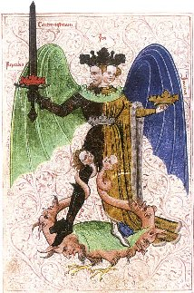
Livre de la Sainte-Trinité,
XVe Cgm. 598 f. ?- [cliquez pour
agrandir]
[cette
magnifique image permet de voir l'androgyne terrassant le dragon ;
notez les deux principes de l'oeuvre, enlacés aux jambes de
l'Airain, tels qu'ils sont représentés dans l'une des
figures du Livre
d'Abraham Juif. C'est une variation sur le signe des
Gémeaux.]
d. S'il était besoin, cet
hameçon nous
fournirait la preuve des connexions existant entre l'hermétisme
et le fonds symbolique chrétien : en effet, cet hameçon
n'est autre, pour l'alchimiste, que le grappin ou loup [lupus =
lukoV] dans lequel Fulcanelli voit le rémora
de l'oeuvre, cf. in symboles,
Cyrano de Bergerac et le récit des Etats Comiques de la Lune. Il
s'agit de l'artifice permettant de déclencher la coagulation
progressive et très lente de l'aqua permanens. Remarquez encore
que l'hameçon est d'or et à trois pointes ; au risque de
paraître trivial, nous avons maintes fois signalé dans ces
pages que l'or alchimique était un métal trivalent,
autrement dit « à trois pointes », cf. symboles.
e. On sait que la Toyson d'or
fut suspendue à un chêne dans la forêt de Mars.
f.
c'est le problème du poids de nature qui est
évoqué par l'opposition colère - amour ; il s'agit
des plateaux de la balance de Thémis, cf. figure
XII.
L'amour, i.e. la concorde, l'harmonie, ne peut, paradoxalement, prendre
littéralement corps que pour autant que le glaive de l'ange ait
fini son office, autrement dit que lorsque
et aient été séparés. La
sublimation du Mercure détermine l'Aurora Consurgens,
c'est-à-dire la coagulation progressive de l'aqua permanens qui
détermine l'affinité chimique [amour = jilia]
des principes de l'oeuvre.
g. la rosée [drosoV]
est assimilée à l'eau de mer ; les alchimistes en ont
fait leurs humectations et leur sueur. Mais le
fleuve dont il est
question semble se rapporter à drosomeli [miel aérien ou manne
céleste, cf. frontispice du Summum Bonum].
Par assonance, il est permis de voir un rapport entre la rosée
et le chêne [druV] ; idem pour drasiV qui
désigne la Force ou s'exprime le Verbe de Dieu. Cf. en recherche.
C'est ainsi que procède la séparation des parties, qui a
pour but la dépuration, c'est-à-dire la limpidité [augh = éclat du Soleil] de
l'aqua permanens ou Mercure animé : c'est nommer le diable
[ewsjoroV = ].
h. Après la séparation
de
et . Sur la Justice, cf. note c ; cetta
alliance est consacrée par les branchettes d'olivier que les
époux royaux échangent dans plusieurs figures du Ros. Phil.,
emblème d'harmonie et de concorde comme en fait foi la colombe,
cf. f. 25v - f. 14r.
i. thème de la mondification,
illustré
par plusieurs gravures dont l'une du Ros. Phil. C'est
l'un des arcanes réservés de l'oeuvre puisqu'il y faut y
voir la calcination de la matière préparée [i.e.
l'androgyne] par l'eau ignée. Du reste, certains auteurs
appellent aussi l'opération : ablution et séparation ce qui va
dans le droit fil de la note h. Cf.
là-dessus Ripley. Notez bien qu'il
s'agit là d'une phase de la Grande coction se situant
après la 1ère sublimation [celle du ]. Dans le Filet d'Ariadne, Batsdorff [pseudo]
écrit :
« cette ablution se nomme aussi incération et mondification. L'autre est
la coagulation, parce qu'il faut que cette eau si précieuse de
laquelle
nous avons parlé, soit desséchée et retourne en
forme de poudre dont
elle avait été extraite. La calcination suit, d'autant
que la matière
calcinée est plus propre et plus disposée à la
sublimation, et qu'elle
est plus proche de la fixation,
ce que plusieurs Philosophes nomment
fusion. »
[chap. II, les Minéraux et les Métaux]
La fusion ne doit pas être comprise ici comme une dissolution
mais bien comme une conjonction au sens où l'entendent les
physiciens contemporains [enantiown krasiV = mélange des
éléments opposés
et ,
cf. Platon, Lois].
Cette ablution est réalisée par l'eau de roche, telle
qu'elle en a été tirée de la première
opération, qui est la dissolution : c'est le Lait de Vierge dont
parlent Artephius, Pontanus et Lavinius,
les seuls qui, au dire de Fulcanelli, aient été assez
charitables pour dire quelque vérité sur le deissolvant.
Dans le Psautier
d'Hermophile de Joubert de la Salette (1754), on lit encore ceci
qui achève de nous édifier :
«
Apprenons ici de Morien qu'il faut
bien laver ce corps immonde qui est le laton qui doit être
desséché et blanchi parfaitement et l'on doit lui infuser
une âme et lui ôter toute son ordure afin qu'après
la mondification, la
teinture blanche entre en lui. » [Bibliothèque des Philosophes
Chymiques, vol IV, ii, chap. LXIV]
Cette séparation représente donc bien l'Auro Hora, en
tant qu'elle est le signe de la conjonction imminente, signalée
par les couleurs de la queue de paon [alias l'arc-en-ciel], cf. figure XV de l'Aurora Consurgens.
Nicolas Grosparmy [le Trésor des
Trésors] dit encore que la
matière du lapis doit être séparée de deux
humidités dont l'une est [Mercurius] et l'autre [Sulphur].
L'Aurore des alchimistes passe d'abord par une phase d'albedo,
succédant à la nigredo puis une phase de « robigo
».
j. Il s'agit du Christ de l'Apocalypse qui tient dans sa bouche un
glaive à deux tranchants ; on en trouve l'équivalent
alchimique dans la représentation du cercle à deux croix 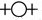
exprimant l'ambivalence de Lucifer et d'Hesperos, l'instant
d'équilibre étant réalisé alors que l'astre
atteint le medium coeli, où il prend alors la valeur de
l'hiéroglyphe  [ioV = venin, rouille]
[ioV = venin, rouille]
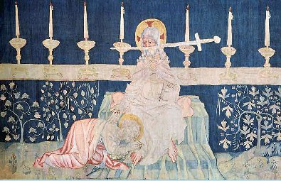
le Christ de l'Apocalypse,
Apocalypse de saint Jean, fin XVe
 , autre formulation de la ; à
droite,
le triangle de dont la direction
va vers le sulphur
comme en atteste l'orientation de la garde du glaive. La
transfiguration des métaux est indiquée par les
étoiles que laisse échapper la main droite du Christ,
moins visible ici toutefois que sur la miniature d'un mss de la
bibliothèque nationale de Berlin. On voit saint Jean,
couché près du Christ. Si l'on examine le polyptique d'Issenheim et notre
section sur saint Jean le Baptiste,
on se rendra compte que le lien se situe dans l'agneau qui ne figure
pas ici de facto : Jean-Baptiste s'écrie en voyant Jésus
: « Voici
l'agneau de Dieu qui ôte le péché du monde. »
(Jean, 1, 29). La symbolique générale de l'agneau tant en
alchimie que dans la tradition chrétienne est suffisamment
connue pour que nous n'insistions ici que sur quelques accents
particuliers ; et surtout un trait qui n'a pas échappé
à R. Guénon quand il a identifié l'agneau pascal
à l'agni védique, lequel, ce qui est à remarquer,
est supporté par un bélier. Remarquons que ce
rapprochement ne vaut que pour autant que l'on considère
seulement l'association agni - ignis .
Occasion pour nous de réaffirmer l'importance de
considérer certains rapprochements de pure assonance
phonétique - ou d'assonance spirituelle - comme se réclamant uniquement de la
cabale hermétique
; que le lecteur n'y voit pas de rapprochements fortuits entre
vocabulaires, qui sont bien sûr sans signification. Mais
Fulcanelli a ici donné toute la mesure de ce point de science
dans sa trilogie pour qu'il nous soit permis de passer outre et de
poursuivre nos réflexions. On a souligné que l'agneau de
l'Apocalypse revêtait un caractère léonin et que
cet agneau - argon
- exerçait sa colère - cf. supra
- ; si l'on se souvient du signe zodiacal du Bélier, dont les
Chaldéens tenaient le Soleil pour maître, la relation est
facile à établir, de même que le caractère
dual du Bélier [Arès
et Ariès].
, autre formulation de la ; à
droite,
le triangle de dont la direction
va vers le sulphur
comme en atteste l'orientation de la garde du glaive. La
transfiguration des métaux est indiquée par les
étoiles que laisse échapper la main droite du Christ,
moins visible ici toutefois que sur la miniature d'un mss de la
bibliothèque nationale de Berlin. On voit saint Jean,
couché près du Christ. Si l'on examine le polyptique d'Issenheim et notre
section sur saint Jean le Baptiste,
on se rendra compte que le lien se situe dans l'agneau qui ne figure
pas ici de facto : Jean-Baptiste s'écrie en voyant Jésus
: « Voici
l'agneau de Dieu qui ôte le péché du monde. »
(Jean, 1, 29). La symbolique générale de l'agneau tant en
alchimie que dans la tradition chrétienne est suffisamment
connue pour que nous n'insistions ici que sur quelques accents
particuliers ; et surtout un trait qui n'a pas échappé
à R. Guénon quand il a identifié l'agneau pascal
à l'agni védique, lequel, ce qui est à remarquer,
est supporté par un bélier. Remarquons que ce
rapprochement ne vaut que pour autant que l'on considère
seulement l'association agni - ignis .
Occasion pour nous de réaffirmer l'importance de
considérer certains rapprochements de pure assonance
phonétique - ou d'assonance spirituelle - comme se réclamant uniquement de la
cabale hermétique
; que le lecteur n'y voit pas de rapprochements fortuits entre
vocabulaires, qui sont bien sûr sans signification. Mais
Fulcanelli a ici donné toute la mesure de ce point de science
dans sa trilogie pour qu'il nous soit permis de passer outre et de
poursuivre nos réflexions. On a souligné que l'agneau de
l'Apocalypse revêtait un caractère léonin et que
cet agneau - argon
- exerçait sa colère - cf. supra
- ; si l'on se souvient du signe zodiacal du Bélier, dont les
Chaldéens tenaient le Soleil pour maître, la relation est
facile à établir, de même que le caractère
dual du Bélier [Arès
et Ariès].
j. le mont Sion est synonyme, pour
l'hermétiste,
de conjonction - krasiV
- des principes et ,
cf. supra. Il y a une relation entre le mont
-i.e. la
conjonction - et la Trinité car le Sion est connecté avec
la Jérusalem céleste ; elle est exprimée sur la
figure ___ de l'Aurora Consurgens. cette relation correspond à
la transfiguration de la matière qui, d'amorphe qu'elle
était avant le passage au creuset [†] , se dépure et
devient cristalline. D'où cette sentence de l'apocalypse :
« Je
suis l'alpha et l'Oméga, le Principe et la fin »
(21, 1-6) qui rejoint en tout point les préceptes de la Tabula Smaragdina
et de la Chrysopée de Cléôpatre, avec le serpent
Ouroboros, cf. Berthelot, Introduction à
la chimie des Anciens.
k. Glaive de lumière,
équivalent de l'épée flamboyante : c'est la
lumière solaire éclatante comme l'éclair dont
parle Zosime [Traité
du divin Zosime sur l'Art, cf. prima
materia et Jung, les Racines de la Conscience,
pp. 141-143]. Nous avons évoqué à la note
précédente - note j - le thème de la
transfiguration ; peut-être peut-on aller plus loin et parler de
transsubstantiation : Jung cite ce texte des Hébreux :
« Vivante
en effet est la parole de Dieu, efficace et plus incisive qu'aucun
glaive à deux tranchants : elle pénètre jusqu'au
point de division de l'âme et de l'esprit [...] »
(IV, 12) et de poursuivre par : «
Déjà, au XVIe siècle, on avait vu naître la
théorie de la mactation ; son fondateur, Cuesta ... affirmait
que le Christ était immolé (mactatus) par le prêtre.
» [les Racines
de la Conscience, le symbole
de la Transsubstantiation, pp. 226-227]. Ces réflexions
mettent en avant le prêtre ou le Verbe de Dieu, dans lequel il
est facile de deviner le Mercurius ou dissolvant ; dès lors, la
commixtion du vin et de l'eau ressemble étrangement à la
conjonction de nos deux principes.
Ce texte est très important en ce que le pont jeté entre
les deux traditions, hermétique et chrétienne, y est
d'une netteté rarement autant accusée ailleurs. L'épée
est l'un des attributs de la Justice, mais elle ne
sépare pas, de façon manichéenne, le bien du mal ;
bien plutôt joue-t-elle le rôle de la lyre d'Orphée
qui calmait les animaux sauvages : elle sépare,
métamorphosés par l'imprégnation de l'eau
ignée [Eau Divine,
réalisant les Laveures dont parle Flamel, cf. Livre des Laveures],
la Terre du Ciel
en incluant un zeste de feu dans ce cristal pour en faire un
carbunculus : c'est le lapis.
commentaire des 21
premières miniatures de l'Aurora Consurgens
Carl-Gustav
Jung (1875-1961) vers 1950
I. Quelques
mots sur la version retenue : c'est le manuscrit [
mss]
enluminé de Zurich [
Zentralbibliothek,
MS. Rhenoviensis 172] qui
est le plus ancien ; à ce qu'en dit Jacques van Lennep
[
Alchimie, Dervy,
1985, pp. 55-70], il manque l'incipit et
quelques miniatures, que l'on trouvera annexées en
section II.
Ce mss provient de l'abbaye de Rheinau. Un autre mss est
conservé à la bibliothèque de Prague mais
paraît postérieur au précédent, datant de la
moitié du XV
e siècle [
Bibliothèque universitaire
ms VI, Fd 26]. D'autres copies ont été
réalisées au XVI
e siècle pour la
bibliothèque de Berlin, à Erfurt, en 1526 et pour celle
de Leyde ; ce dernier mss aurait inspiré un autre exemplaire
conservé à Prague et exécuté en 1569 ; on
trouve encore quelques miniatures dans un mss datant de 1578 dont on a
donné quelques petites reproductions, mêlées
à d'autes du
Ros. Phil.
Sur l'auteur supposé de ce
traité, rien d'assuré : M.-L. von Franz semble
persuadée qu'il s'agit bien d'un écrit de Thomas d'Aquin,
suivie en cela par Jung. L'AC est pourtant tenu aujourd'hui pour un
écrit pseudo aquinate. Nous aborderons ce point dans la
section
II réservée à l'examen du reste des miniatures
et aux écrits
alchimiques évidemment pseudépigraphes de Thomas d'Aquin.
II. Notes additionnelles
sur les
miniatures 1 à 21 : ces notes ont été
rédigées après que nos commentaires aient
été disposés, à la lecture - a posteriori -
du chapitre de Jacques Van Lennep [
Alchimie, op.
cit.] sur l'AC. L'aigle -
fig. I -
symbolise
. C'est la période où le Compost est
dissout dans la mer des philosophes, cf.
prima figura de Lambsprinck ; l'amas figuré au pied
de l'androgyne signale la fin de cette phase. Les trois jambes de la
créature simiesque -
fig. II -
représenteraient trois des Eléments d'Empédocle :
le poisson
; la gerbe
enflammée
et la jambe
de cheval
[
lointain rappel
de Pégase qui correspond à l'un des deux sels issus de la
décapitation de Méduse, avec Chrysaor, cf. Fontenay] ; nous ne trouvons pas au
sabot de signification particulière et J. Van Lennep se
réfère à un passage du
Myst. Cath.
de Fulcanelli. Sur la musique des sphères, cf. notre commentaire
au
preambulum
de l'
Atalanta fugiens.
À la
fig. IV, il semble que nous ayons
un point de repère valide avec la
Ve Parabole du texte de l'
AC :
«
là où Senior pose un aigle
sur le toit, et sur les côtés, les images des diverses
propriétés. »
C'est une référence au prologue de la
Tabula chemica
de Senior Zadith, déjà évoqué plusieurs
fois et dont le texte apparaît au
Theatrum
Chemicum, vol. V, pp. 193-239 [
Strasburg, 1622]. Mais le texte
est plus ancien et se retrouve dans la compilation
Philosophiae Chymicae
quatuor vetustissima scripta,
Francof. apud
Johan. Bernerum, 1605, in-8°. Le vieillard, selon les
versions, serait Hermès ou Cratès [
cf. Livre de Cratès].
J. Ruska dans sa
Tabula Smaragdina
[
Heidelberg, 1926] pense
que l'on pourrait voir dans cette table que tient le vieillard la
Table d'Émeraude,
interprétation plausible compte tenu des pictogrammes
décrits par Senior. Notons que cette figure apparaît
encore dans
Pandora, das ist die
edelste Gab Gottes, [
Anonymous, 1582, p. 241 cité par
Barbara Obrist in http://www.hyle.org/journal/issues/9-2/obrist.htm
; on en connaît une autre
version datant d'au moins 1550, in Alchimistisches Manuscript, Ms.
L IV 1, UB Basel].
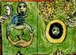
détail de la Tabula que
tient Cratès ou Zadith dans le Pandora, cf. figure V
Il n'est que de comparer avec la table
que tient Zadith dans la superbe
figure V pour
voir l'identité totale entre les deux. La « fluence
», c'est-à-dire la subtilité ou quintessence [
leptotath]
des luminaires est visible aux rayons qui en émanent sur la page
de droite. Il y a lieu en effet de considérer la page de gauche
à l'instar de la gravure du
Ros. Phil.
[
cf. supra]
où l'on voit le
spiritus
corruptus s'élever jusqu'au Noûs pour y
être dépuré. C'est là le combat que se
livrent le fixe et le volatil. A droite rien de tel : la sublimation
est réalisée et les luminaires apapraissent en forme de
corps glorieux comme principes principiés :
et
; au-dessous,
l'anthropos, sur lequel nous
reviendrons en
seconde partie.
Sur la
fig. VI,
Van Lennep écrit :
«
il est important de préciser que le
venin était
symboliquement associé au levain parce qu'il
correspondait aussi au "ferment",
à la matière qu'il fallait joindre à l'eau
mercurielle au moment de son apparition. »
[Alchimie, p. 65]
Chevreul parle de la pâte de levain, au §72 de son
Résumé de la Matière,
etc. Mais pour
lui, il était logique que l'eau mercurielle contînt
déjà de l'argent ou de l'or que les alchimistes tentaient
d'augmenter comme le fait le levain de pâte avec lequel on peut
faire « lever » une quantité
indéterminée de pâte de farine :
«
On sait, depuis une haute
antiquité, que la pâte de froment levée fait lever
rapidement la pâte de farine de froment fraîche dans
laquelle on l'introduit ; c'est donc l'exemple d'un corps qui en convertit un autre
en sa propre substance. Nous renvoyons les détails
à un article du mois de mars 1850, p. 1142 et 1143 de ce
journal. II suffira de rappeler que Van Helmont , dès la
première moitié du XVIIe
siècle, a dépassé, comme novateur et inventeur,
des physiologistes et des médecins qui, dans ces derniers temps,
ont fait jouer un rôle important aux ferments dans
l'économie organique ou dans des matières privées
de la vie, provenant des plantes ou des animaux. »
[
cf. Chevreul critique de Salverte,
une Histoire de la Magie]
Mais nous ne voyons pas là d'explication rationnelle sur
l'association par Van Lennep du venin [
ioV]
au levain. Il y a là confusion entre le lapis,
considéré comme ferment de l'or vulgaire et les
conditions par lesquelles on peut préparer le lapis même.
À la
fig. VIII est associée :
«
La Sagesse à tête rouge
(celle qui produit la pierre ultime) allaitant deux vieillards ...
combinaison d'un type byzantin et du thème
médiéval du miracle de la lactation, comme celui de la
Vierge humectant de son lait les lèvres de saint Bernard. »
[
idem, p. 62]
avec une évocation de la préparation par Thomas d'Aquin
du sucre de

! [
1,
2, 3, 4, 5, sur
l'acétate de plomb].
Dans un vieux manuscrit attribué à de Bremens se trouve
une préparation de quintessence de plomb obtenue en traitant la
litharge par le vinaigre distillé [
c'est le Lait de vierge, dont la
préparation a été donnée par Geber].
L'acétate de plomb ainsi obtenu en masse pâteuse
après évaporation, est mis à fermenter deux ou
trois mois, et au bout de ce temps le tout est tombé en cristaux
qu'on redissout et qu'on fait recristalliser. On a ainsi un vitriol
d'aspect brillant et presque nacré, dont les
propriétés sont toutes autres que celles de
l'acétate de plomb vulgaire. Il ne peut s'agir que de carbonate
de plomb ou blanc de céruse. La
fig. IX
est l'une des plus
curieuses du recueil. Aussi vaut-elle que l'on voit tout le commentaire
que Van Lennep lui consacre :
«
Un peu plus loin, une miniature
surprenante présente un personnage remplissant des creusets de
ses excréments (vomissure, urine et déjections anales).
Il s'arrache les cheveux. En face de lui, se tient un autre, dont le
crâne est décalotté, le sexe, le foie et le coeur
arrachés. Cette illustration correspond à un chapitre
traitant " des quatre choses de l'homme " [...] Le texte de l'Aurora
propose des correspondances précises : merde / terre ; urine /
eau ; sang / air ; cheveux / feu ; cerveau / eau froide ; coeur / eau
chaude ; foie / air humide ; testicule / terre sèche. »
[
Alchimie,
pp. 64-65]
On reverra là-dessus ce que nous avons dit en plusieurs endroits
du thème de la
Colère
[
1, 2] ; les
correspondances proposées ne nous semblent pas très
convaincantes. L'excrément rappelle la boue, le limon,
l'immondice d'où l'on tire une partie du dissolvant [
ce que Canseliet appelle le «
trux » de l'oeuvre]. L'urne
renvoie au sel d'Amon ; le sang et le coeur au Soufre rouge et au
. Le cerveau représente Zeus ou le
spiritus sancti. Mais ce
qui nous paraît singulier, c'est que Van Lennep voit un homme
là où il nous semble que l'on aperçoit une femme,
dans le personnage de droite... Du coup, la référence au
testicule paraît un contre sens. La
fig. X
reprend le symbolisme de la graine et donne l'occasion à Van
Lennep de glisser cette citation :
«
Maintenant,
toi, mon fils (Horus) va trouver l'agriculteur, et demande-lui quelle
est la semence et quelle est la moisson. Tu apprendras de lui que celui
qui sème du blé, moisonne du blé... C'est ainsi
que l'or produit l'or et voilà tout le mystère. » [
Epitre d'Isis à
Horus, cité par F. Hoefer, Histoire de la Chimie,
vol. I, p. 291].
La
fig. XI permet d'asseoir la relation entre
trois traités : l'
AC, le
Ros. Phil.
et le
Donum Dei.
Cette aquarelle a donc une grande importance :
«
L'homme baise le sein de sa compagne.
L'allégorie de la femme allaitant son amant se lit dans le texte
associé à celle du champ : "Viens, ma bien-aimée,
sortons dans ton champ... Voyons si ta vigne a fleuri, si les fleurs
ont produit du fruit. Là, tu donneras tes seins à ma
bouche." » [Alchimie, p. 61]
La citation de Van Lennep est tirée de l'
Aurora Consurgens
de M.-L. von Franz, p.133 et inspirée du
Cantique des Cantiques
[VII : 13]. On remarque que la
fig. VIII
est complémentaire de la
fig. XI. On
peut trouver des remarques complémentaires dans un texte du
pseudo-Aristote [
De Lapide philosophorum,
pp. 232-240 in Artis Auriferae, i] et
Rosinus ad Sarratantam
Episcopum [
idem,
pp. 178-203].
L'
Epitre
d'Isis à Horus doit être rapprochée
du
Dialogue de Marie et
d'Aros. La
fig. XII,
assez énigmatique, semble tirée de ce passage de l'
AC :
«
Toute la perfection tient dans le principe
ternaire : la mesure, le nombre et le poids. »
[Alchimie, p. 62]
Van Lennep fait remarquer que le passage rappelle le
Livre des Balances
attribué à Djabir, du début du X
e
siècle. Remarque intéressante de l'auteur : c'est
l'époque où l'aigle, c'est-à-dire
est tellement gorgé d'or qu'il ne peut plus voler, signant le
début de la coagulation de l'eau mercurielle. L'idée est
à retenir et il est fort possible que cet oiseau, que nous avons
pris d'abord pour un corbeau, soit un aigle... Nous ferons remarquer
néanmoins que l'épée est associée au
thème de la putréfaction, i.e. au corbeau. La
fig. XIII ne laisse pas, elle aussi, de poser
des problèmes : qu'est-ce que représente ce personnage
à la fois hydropique et altéré ? Van Lennep pense
que la femme qui présente des simples à notre malade
symbolise l'alchimie [
on
possède un exemplaire de la miniature, de Berlin, où une
femme remplace le malade] ; cet hydrops dont il souffre est
fréquemment cité dans les textes et associé au
thème de la
sueur. Le texte de l'
AC
signale qu'il est atteint d'un excès de phlegme dont la
théorie date du VI
e siècle av. J.-C. Il s'agit
:
«
de l'eau ou vapeur qui
s'élève de la matière de l'oeuvre et qui en se
cohobant d'elle-même, la blanchit. C'est pourquoi quelques
philosophes ont donné le nom de phlegme au Mercure et
à la pierre parvenue à la blancheur.
»
[Alchimie, p. 63]
Le manque de place nous oblige à faire l'impasse sur le phlegme
dont nous renvoyons l'étude à une section
ultérieure, cf.
Aurora II.
La
fig. XIV a déjà
été examinée, cf.
supra
sur Baubô. La
fig. XV n'est pas
explicitée par le texte de
l'
AC
et Van Lennep ajoute que cette figure n'a pas fait l'objet de
commentaire de la part de Barbara Obrist [
Les débuts de
l'imagerie achimique (14e-15e siècles), Paris, Le
Sycomore, 1982, ouvrage hélas épuisé]. Il
ajoute ce texte de Gerhard Dorneus extrait du
De transmutationibus
metallorum [Theatrum Chemicum, vol. I, p.
491 et non p. 599 comme cela est indiqué à la note 81]
qui n'évoque à vrai dire le paon que pour le situer entre
« l'oiseau de nuit volant sans ailes » et le phénix.
Du moins Dorneus situe-t-il le paon au bon endroit de la Grande
Coction, au lieu que Van Lennep le place avant le résultat
final, ce qui est contraire à la logique hermétique.
La
fig. XVI correspondrait à la
Visio Arislei.
Dans cette vision :
«
Arislée asssita aux noces d'un frère et d'une soeur, enfants du roi de la mer. Celles-ci
étant consommées, l'époux incestueux mourut. Le
coït tragique est représenté dans un vase
posé sur des flammes près du roi. Cette allégorie
correspond aux purifications successives du métal.
»
[Alchimie, p. 64]
Le désaccord est ici total entre notre interprétation et
celle qu'en donne Van Lennep ; il y a deux moines près du roi ;
notons que la version présentée dans l'
Alchimie
est différente de celle du mss de Zurich. La
fig. XVII n'est pas citée par Van
Lennep et représente sans doute une autre version de la
fig. XI ou, peut-être, de la fig. XXIII.
La
fig. XVIII se rapporte manifestement
à l'oeuf des philosophes [
le
vase de nature, cf. l'une des figures de la Monade
Hiéroglyphique de John Dee]
et a été peinte en marge du texte auquel elle est donc
intégrée. Le texte semble inspiré d'un passage de
Senior Zadith : «
Tu me manqueras comme le coq manque
à la poule », les quatre parties de l'oeuf
étant ensuite comparées aux Éléments
d'Empédocle. La
fig. XIX va
nous permettre de rectifier un contre sens : ce n'est évidemment
pas l'aigle, bien bien sûr le
phénix
qu'il faut voir dans cet oiseau juché sur le
. Pourtant,
dans cette version, on concevra sans doute
que l'oiseau se rapproche davantage de l'aigle
que du
phénix. Tel n'est pas le cas de la version, datant du XVI
e
siècle, présentée par Van Lennep p. 66 de son
Alchimie.
«
Ainsi
dans la fabrication du pain, avec un peu de ferment, il nourrit une
grande masse de pâte, et ainsi il change la substance
entière de la pâte en ferment. » [
d'après
Julius Ruska, Tabula,
etc. p. 184]
Sur le ferment, cf.
Chevreul.
Comme nous l'avons déjà constaté, il semble y
avoir confusion entre la préparation du
lapis et
la transmutation métallique ; d'ailleurs, les récits de
soi disant transmutation évoquent plutôt des tours de main
concernant le lapis... Voilà qui n'a pas été
suffisamment relevé, cf.
Alexandre
Sethon.
En revanche, il faut voir dans la fig. XIX un processus de maturation,
de mûrissement qui prépare la résurgence du Soufre
et sa projection dans le Corps du
lapis. Selon Van Lennep, ce
ferment est concrétisé par le mortier. La
fig. XX illustre le basilic qui :
«
...
dans un traité antérieur du moine Théophile,
naissait d'un oeuf de coq couvé par un crapaud ... [il] se mire
ici dans un miroir tendu par une hermine. Le texte compare le mercure
à ce monstre à cause de son venin, parce qu'il avait la
faculté de dissoudre tous les corps avec lesquels on le mettait
en présence ... »
[Alchimie, p. 65]
Malheureusement, ce que Van Lennep ne dit pas, c'est que le venin du
basilic est très particulier, en ce qu'il
pétrifie [
le spiritus
est
changé en terra ];
et c'est son regard qui est son venin, autrement dit la lumière
de son oeil qui constitue un feu
[
remarquons
que seul l'Eau n'est pas représentée au plan symbolique
dans cette fable, sauf à la considérer comme une
dissolution ce qui reste possible en tenant compte de l'aspect
reptilien du basilic]. Il faudrait évoquer ici toutes
les fables que nous conte Ovide dans ses
Métamorphoses,
entreprise impossible à mener ici ; mais la légende
grecque primitive de Deucalion et de Pyrrha [
voir Jung, les Racines de la Conscience,
Visions de Zosime, p. 192]
paraît résumer tout ce qu'il y aurait lieu d'en dire. Il y
a lieu de voir dans le basilic l'évocation du Mercurius senex,
dans la belette, celle de la panacée ou de l'antidote qui
transforme les cailloux sans valeur en pierres précieuses : le
miroir ou bouclier d'Athéna représente cet artifice que
nous ne cessons d'évoquer qui provoque la coagulation de l'eau
mercurielle, permettant ainsi à l'Artiste de saisir aux filets
les poissons dont parle D'Espagnet dans son
Oeuvre Secret
d'Hermès : c'est la
CLEF
de l'oeuvre. Pour illustrer ce point de science, il n'est pas inutile
d'ouvrir un vieux traité attribué à Nicolas
Flamel, l
'Alchimie
de Nicolas Flamel,
rédigé en fait vers 1750. Ce traité est
illustré par des aquarelles qui figure dans une compilation de
Denis Molinier dont nous avons extrait ce qui suit :
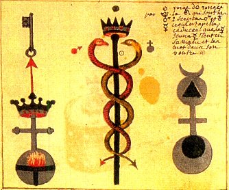
troisième page de
l'Alchimie de Flamel, agrandissement
Au centre, l'un des plus beaux
caducées d'Hermès qui se puisse voir.
Notez les trois annotations : l'un des serpents est «
étiqueté »
,
l'autre,
. Alors que la tige
du caducée a un
rapport avec le
. Comment
analyser cela ? Rappelons-nous que les serpents ne sont
autre que les natures métalliques dissoutes [
ioV].
Or, qu'introduit l'Artiste, sous forme porphyrisée, comme
matières dans son creuset ? L'une, véritablement
métallique, se signale comme le Soufre rouge, issu du vitriol
romain : c'est Mars. L'autre a une nature plus terreuse et
représente
Vénus au coucher : Vesper [
Hesperus
: ], dont la nature est humide,
féminine et
froide. Nous la rapprocherons de l'Espérance, seule
déesse qui resta
dans la boîte de Pandore, créée par
Héphaïstos, le dieux boiteux. On
conçoit donc sans difficulté que le Mercure soit en
grande partie le
résultat d'une union entre des substances voilées par
Mars et Vénus ;
mais on note aussi un cousinage avec Vesper ou Terre hermétique,
signifiée par la stibine puisque Atlas est frère de
Vesper. Dès lors,
nous devons nous poser la question. Ce caducée
représente-t-il le
Mercure dans son premier état, auquel cas les
hiéroglyphes figurés en
note sont les mêmes que ceux qu'on aperçoit sur ce
détail, ou bien
s'agit-il du Mercure animé - ce dont tendrait à faire
croire la hampe
du caducée - auquel cas, nous voilà ramenés
à cet autre
détail ? Nous
savons que les alchimistes sont gens malicieux et il est possible que
ce caducée soit une figure à double sens, comme semble
l'indiquer,
d'ailleurs, E. Canseliet dans l'une de ses préfaces au
Mystère des
Cathédrales. Aussi, ce caducée garde-t-il
son mystère et ressemble-t-il
un peu à une particule élémentaire, dont on ne
peut pas à la fois «
voir » ou plutôt même concevoir sa forme
corpusculaire ou sa
forme ondulatoire [
cf. la
Mécanique Ondulatoire de Louis de Broglie].
En fait, tout comme De Broglie, peut-on proposer ici une théorie
de la
double solution qui permet de voir à la fois dans les symboles
martien
et terrestre l'aspect mercuriel et soufré des matières.
L'étoile du
couchant, Vesper
,
prend la forme chthonienne qui la désigne comme la
quintessence de l'Art et s'oppose, en la complétant, à la
forme luciférienne et primitive de l'étoile du matin
. Nous aiderons ici l'étudiant en lui rappelant
que Vesper habitait avec son frère une contrée
située à l'ouest du
monde et nommée Hesperitis [
cf.
Matière]. L'Artiste fera bien
alors de
vérifier dans quelle phase est sa Lune, en sorte de s'orienter
dans le
labyrinthe de Salomon, pourvu du compas de Mathurin Eyquem, sieur du
Martineau [
le Pilote de l'Onde Vive
ou le Secret du flux et Reflux de
la Mer, Jean d'Houry, Paris, 1678] :
«
Comme l'astre des nuits exerce sur la
masse et l'étendue des océans
une action certaine et prodigieuse, de même possède-t-il
une influence
absolue et féconde sur le mercure que les philosophes
dénommèrent
encore leur grande mer
ou mère. »
[
E. Canseliet, De Cyrano
Bergerac, in Alchimie,
Pauvert, 1978]
Notez que, par cabale, il y a là un rapport avec la fable de
Deucalion
et Pyrrha car ils furent sommés, par Diane, de jeter des pierres
sur
leur
Grand'mère...
qui n'était autre que
[
Jung admet,
dans ses Racines
de la Conscience,
chap. II, l'Archétype de la
Mère, que la grand-mère, la mère, puissent
revêtir comme aspects la mer et l'eau tranquille ou dormante, cf. p. 96].
Nous pouvons poser
aussi qu'il existe un rapport de couleur entre les deux états du
crépuscule et la planète
: le jaune
orangé, qui se signale comme
la 4
ème
couleur fondamentale de l'oeuvre, se situant précisément
entre
le blanc et le rouge : c'est l'espérance du Soufre rouge dont
l'Artiste souhaite la résurrection du royaume des morts, par
l'opération
de la réincrudation. L'occident [
patrie de Vesper] est à
l'image du
jardin enchanté des Hespérides où les pommes d'or
sont gardées par un
cruel dragon [
que seul Hercule et
Cadmos surent occire].
Autre chose : le régime de la Lune. Car dans un sens, le Mercure
philosophique, par ses attributs et hiéroglyphes
célestes, correspond à
la conjonction de Vénus [
sous
la forme de Vesper ] et de la
Lune
montante : c'est Diane aux cornes lunaires [
voyez ici un point de
cabale hermétique rarement décrit, in Atalanta XXXII]. Notez que ce
phénomène peut aussi se dérouler alors que la lune
est descendante et
Vénus montante
. Il y a
là un dualisme dont il est facile de faire voir
la solution : dans l'hypothèse où la lune est montante et
Vénus
[
Vesper] descendante,
nous savons que Vénus prend une forme
chthonienne. Munie alors du croissant de Lune, elle ne peut affecter
que la forme de Neptune [
le
trident] qui lui confère de manière
radicale sa nature marine, humide et froide
. Or,
Neptune, selon les
astrologues, dirige le signe des Poissons [
ce qui reste d'ailleurs
entièrement à prouver, raison pour laquelle nous avons
révoqué en
doute, dès le début, l'utilisation de signes du zodiaque
dans nos
études statistiques]. Or, si nous avons les plus grands
doutes quant au
rapport existant entre le signe des Poissons [
cf. notre zodiaque alchimique] et
Neptune en astrologie,
en revanche, en alchimie, il ne fait pas le moindre doute que les
nautoniers puissent y étendre leurs filets pour attraper les
poissons
gras de Jean d'Espagnet. En revoyant le caducée
d'Hermès et compte tenu de l'annotation, en somme, on peut y
trouver le
signe du Soufre rouge [
Ariès]
et du Soufre blanc [l
a Terre,
Perséphone]. Mais la promesse du Soufre [
Espérance]
ne sera tenue que
lorsque le soleil sera parvenu au Sagittaire. Encore faudra-t-il que
l'Artiste, entre-temps, ait élu les vraies matières, ait
su les mettre
dans un vase adéquat et les ait fait cuire dans l'eau idoine, et
au
degré de calorique requis. Passons à présent
à l'arcane de gauche. Nous voyons un feu. quant à l'image
de droite, elle montre un symbole
complexe où quatre hiéroglyphes célestes se
trouvent impliqués : Mars,
Vénus, la Terre et un soleil noir. Ce soleil noir désigne
cet
astre aveugle
évoqué en début de section ; il s'agit de la
marque de la sublimation du Soufre ou sulphur
et la
masse de la terre donne ainsi à voir un
croissant lunaire, concave vers le haut, rendu visible par l'embryon
hermétique. En somme, ce symbole donne clairement à
entendre
que les parents de la Pierre sont le
et la
,
ainsi qu'Hermès
l'écrit dans sa
Table d'Emeraude
et que les fruits du travail
hermétique consistent en une terre alliée à un
soufre [
il s'agit des
deux natures métalliques dont l'une est en effet de type
terreux,
l'autre affirmant davantage son éclat métallique - c'est
le bouton de
retour d'E. Canseliet auquel on peut appliquer l'expression de «
retour
des cendres »]. Notez encore qu'au début du
travail, la Lune est pleine
et que, petit à petit, le croissant de Lune va augmenter [
la Lune est
ici descendante, à l'Orient de l'oeuvre]. Enfin, un
triangle est
visible dans Mercure qui affirme la prééminence, en une
entité, du
corps, de l'âme et de l'esprit. Le corps est cette Terre,
l'âme est ce
soleil noir

et l'esprit est le Mercure, c'est-à-dire
le vaisseau de nature. A gauche, la CLAVIS ou artifice de la
coagulation du Mercure, juchée sur une flèche qui exprime
la sublimation du Mercurius. Voilà l'aurore de l'oeuvre ou
stibine couronnée, la même qui s'exprime au faîte de
l'arbre alchimique du
Mercurius
Redivivus de Samuel Norton.
La
fig. XXI suggère pour Van Lennep
«
la
calcination de la matière, des métaux vils et
l'extraction de leur principe, le mercure, des cinq âmes qui
s'échappent des flammes de l'enfer où restait un dragon, la matière
fixe. » [
Alchimie, p. 67]
C'est la manifestation du
qu'il faut voir dans cette figure : voyons que les cinq âmes
correspondent aux cinq éléments de l'idéogramme du
sulphur [
+ †
= 5] ; c'est
donc la quintessence qui est symbolisée par la combinaison du
feu et de la croix puisque
5
est le nombre nuptial des Pythagoriciens et qu'il exprime le
symbolum du
Mysterium conjunctionis.


 nitrum -
nitrum -  arc -
arc -  Zeus -
Zeus -  adversus-
adversus-  luna
descrecens [in aurorae tempore] -
luna
descrecens [in aurorae tempore] -  Sol Ares
-
Sol Ares
-  luna veneris -
luna veneris -  Sal Amon
-
Sal Amon
-  stella cum cruce -
stella cum cruce -  ioV cristou [chaux
mercurielle] -
ioV cristou [chaux
mercurielle] -  aurea stibi -
aurea stibi -  antimonium [antimimon]
-
antimonium [antimimon]
-  vitri oleum -
vitri oleum -  AZOTH [qeioV] -
AZOTH [qeioV] -  animus -
animus -